{% include JB/setup %}
{% raw %}
<div>
<div class="calibre3"></div><div class="toc" title="Chapter 5Menus, Tabs, Tooltips, and Panels"><div class="toc"><div class="toc"><div class="toc"><div class="calibre3"></div><h1 class="title"><a xmlns:saxon="http://icl.com/saxon" id="chapter_menus" class="calibre5"></a><span xmlns:d="http://docbook.org/ns/docbook" class="sitepoint-chapter-titlepage-label">Chapter <span class="sitepoint-chapter-titlepage-number">5</span></span><br xmlns:d="http://docbook.org/ns/docbook" class="calibre11"/><span xmlns:d="http://docbook.org/ns/docbook" class="calibre5">Menus, Tabs, Tooltips, and Panels</span></h1></div></div></div>
  
      

  
      jQuery is certainly a master of the DOM—effortlessly moving things
  around, animating CSS properties, and manipulating element attributes to
  help us spice up our static content. But static content is a shrinking part
  of the Web; more and more fully featured, highly functional, and
  impressive-looking applications are sprouting up every day. This chapter
  sees us move away from static documents, and into the world of bells and
  whistles for Rich Internet Applications (RIA).

  
      The client team have been reading business magazines and learned of
  the term RIA, and they’re determined to use it as much as possible. They’d
  like to see the site move away from simple brochureware and become an online
  application where users can easily hunt their favorite stars. This, of
  course, means we can move on to some really fun stuff.

  
      This chapter is all about the user interface: we’ll look at grouping
  content logically and providing the user with easy access through drop-down
  menus, tabbed interfaces, sliding panels, tooltips, and accordion controls.
  With these tools under your belt, you’ll be ready to organize even the most
  complex interface into discrete chunks that are easy and fun to play around
  with!

  
      <div class="toc" title="Menus"><div class="toc"><div class="toc"><div class="toc"><h2 class="title1"><a xmlns:saxon="http://icl.com/saxon" id="d4e4813" class="calibre5"></a>Menus</h2></div></div></div>
    
         

    
         We’ve tinkered with a few menus already, but they’ve mostly been
    simple, top-level navigation panes. In this section, we’ll have a look at
    applying jQuery to more intricate menu-style navigation controls:
    collapsible and drop-down menus.

    
         As the StarTrackr! site grows larger (and our client’s requests
    become more elaborate), the navigation structure can grow unwieldy and
    become potentially confusing to our users. A well-crafted menu allows us
    to categorize our content structure while minimizing the valuable screen
    space it consumes.

    
         <div class="toc" title="Expandable/Collapsible Menus"><div class="toc"><div class="toc"><div class="toc"><h3 class="title2"><a xmlns:saxon="http://icl.com/saxon" id="section_expandable_menu" class="calibre5"></a>Expandable/Collapsible Menus<a id="ch05-001x" class="calibre5"></a>
               <a id="ch05-001" class="calibre5"></a>
            </h3></div></div></div>
      
            

      
            A common feature of vertical site navigation is a submenu system,
      where links are grouped into similar categories. This makes it easy for
      the user to find relevant information and, by allowing the top-level
      categories to be expanded and collapsed, lets us store a large amount of
      information in a relatively small area. It also looks cool when menus
      slide open and close shut. A simple and effective expandable menu is
      very easy to set up; in fact, we learned most of the code required for a
      menu way back in <a href="ch02.html" title="Chapter 2Selecting, Decorating, and Enhancing">Chapter 2</a>. We’ll start by
      creating a simple menu, and then add a few extra features to it. Our
      initial menu will look like the one in <a href="ch05.html#fig_expandable" title="Figure 5.1. Expandable menus">Figure 5.1</a>.

      
            <div class="toc"><a xmlns:saxon="http://icl.com/saxon" id="fig_expandable"></a><div class="figure-contents">
        
               

        
               <div class="figure-contents">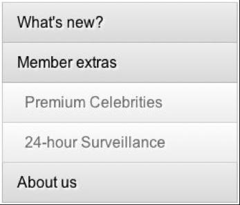</div>
      
            </div><p xmlns:l="http://docbook.sourceforge.net/xmlns/l10n/1.0" xmlns:d="http://docbook.org/ns/docbook" class="title4">Figure 5.1. Expandable menus<a id="ch05-001f"></a>
               </p></div>

      
            These days almost all navigational controls are unordered lists
      that are doing higher duties. Even with the HTML5 <code class="email">nav</code> element, it’s still only going to be a
      wrapper for our tried-and-tested list elements. From a semantic
      standpoint, this is perfectly reasonable; after all, a navigation menu
      is just a list of links. For our expandable menu, we’ll start off with a
      set of nested lists:

      
            
               <div class="toc"><a xmlns:saxon="http://icl.com/saxon" id="d4e4840"></a><div xmlns:l="http://docbook.sourceforge.net/xmlns/l10n/1.0" xmlns:d="http://docbook.org/ns/docbook" class="sitepoint-formal-example-heading"><em class="calibre8" title="chapter_05/01_expandable_menus/index.html (excerpt)">
		
                     <span class="sitepoint-formal-example-filename"><span>chapter_05/01_expandable_menus/index.html</span></span>
          (excerpt)
	</em></div><div class="toc">
          
                  

          
                  <pre class="programlisting">&lt;nav role="navigation"&gt;
  &lt;ul id="menu"&gt;
   &lt;li&gt;&lt;a href="#"&gt;What's new?&lt;/a&gt; 
    &lt;ul class="active"&gt;
      &lt;li&gt;&lt;a href="#"&gt;Weekly specials&lt;/a&gt;&lt;/li&gt;
      &lt;li&gt;&lt;a href="#"&gt;Last night's pics!&lt;/a&gt;&lt;/li&gt; 
      &lt;li&gt;&lt;a href="#"&gt;Users' comments&lt;/a&gt;&lt;/li&gt;
    &lt;/ul&gt;
  &lt;/li&gt;
  &lt;li&gt;&lt;a href="#"&gt;Member extras&lt;/a&gt;
    &lt;ul&gt;
      &lt;li&gt;&lt;a href="#"&gt;Premium Celebrities&lt;/a&gt;&lt;/li&gt; 
      &lt;li&gt;&lt;a href="#"&gt;24-hour Surveillance&lt;/a&gt;&lt;/li&gt;
      …</pre>
        
               </div></div>
            

      
            Now let’s give it a few basic styles so that we’re working with a
      nicer-looking menu:

      
            <div class="toc"><a xmlns:saxon="http://icl.com/saxon" id="d4e4845"></a><div xmlns:l="http://docbook.sourceforge.net/xmlns/l10n/1.0" xmlns:d="http://docbook.org/ns/docbook" class="sitepoint-formal-example-heading"><em class="calibre8" title="chapter_05/01_expandable_menus/menus.css (excerpt)">
		
                  <span class="sitepoint-formal-example-filename"><span>chapter_05/01_expandable_menus/menus.css</span></span>
        (excerpt)
	</em></div><div class="toc">
        
               

        
               <pre class="programlisting">#menu, #menu ul {
  list-style-type: none;
  padding: 0;
  margin: 0;
}

#menu li { 
  cursor: pointer;
  background: #94C5EB;
  border-bottom: 1px solid #444;
}

#menu li a { text-decoration: none; }

#menu &gt; li &gt; a { 
  padding: 2px 10px; 
  font-weight: bold;
}

#menu li li { 
  cursor: auto;
  border: 0;
  padding: 0 14px;
  background-color: #fff;
}</pre>
      
            </div></div>

      
            We’re using a CSS child selector to style the top-level links
      differently from the nested ones. This is supported in all modern
      browsers, but if you require support for Internet Explorer 6, you can
      simply add a class to your markup and base your styles on that.

      
            Since we’ll be reacting to a click event anywhere on the top-level
      list items (including areas not covered by the anchors), we set a
      pointer cursor on those elements so that users can easily tell that
      they’re clickable.

      
            As it stands, we have a nice, multilevel menu. All the items are
      visible, which is a fine behavior for browsers without JavaScript
      capabilities. Now we can progressively enhance this behavior. First, we
      hide all of the categories’ items:

      
            <div class="toc"><a xmlns:saxon="http://icl.com/saxon" id="d4e4852"></a><div xmlns:l="http://docbook.sourceforge.net/xmlns/l10n/1.0" xmlns:d="http://docbook.org/ns/docbook" class="sitepoint-formal-example-heading"><em class="calibre8" title="chapter_05/01_expandable_menus/script.js (excerpt)">
		
                  <span class="sitepoint-formal-example-filename"><span>chapter_05/01_expandable_menus/script.js</span></span>
        (excerpt)
	</em></div><div class="toc">
        
               

        
               <pre class="programlisting">$('#menu &gt; li &gt; ul')
  .hide()
  .click(function(event) {
    event.stopPropagation();
  });</pre>
      
            </div></div>

      
            We’re using the <a id="ch05-002a"></a>
               <a id="ch05-002"></a>child selector to ensure we avoid accidentally hiding
      elements that are nested further down the menu structure. This way, if
      you decide to nest your menu more than one level deep, your code will
      still function as intended.

      
            You may be wondering about the strange
      <code class="email">event</code>
               <a id="ch05-003"></a>
               <code class="email">.stopPropagation()</code> line in this
      block. We’ll cover that shortly, but first let’s finalize our effect
      with a <code class="email">toggle</code> function to slide the menu up and
      down:

      
            <div class="toc"><a xmlns:saxon="http://icl.com/saxon" id="d4e4869"></a><div xmlns:l="http://docbook.sourceforge.net/xmlns/l10n/1.0" xmlns:d="http://docbook.org/ns/docbook" class="sitepoint-formal-example-heading"><em class="calibre8" title="chapter_05/01_expandable_menus/script.js (excerpt)">
		
                  <span class="sitepoint-formal-example-filename"><span>chapter_05/01_expandable_menus/script.js</span></span>
        (excerpt)
	</em></div><div class="toc">
        
               

        
               <pre class="programlisting">$('#menu &gt; li').toggle(function() {
  $(this).find('ul').slideDown();
}, function() {
  $(this).find('ul').slideUp();
});</pre>
      
            </div></div>

      
            Run this in your browser and you’ll see that we’ve created a
      perfectly functional multilevel menu. Before we move on to enhancing it
      with some additional niceties, let’s have a look at what that
      <code class="email">stopPropagation</code> method is doing.<a id="d4e4875"></a>
            

      
            <div class="toc" title="Event Propagation"><div class="toc"><div class="toc"><div class="toc"><h4 class="title3"><a xmlns:saxon="http://icl.com/saxon" id="section_event_propagation"></a>Event Propagation<a id="ch05-004"></a>
                  <a id="ch05-004a"></a>
               </h4></div></div></div>
        
               

        
               Event propagation describes the flow of an event through the DOM
        hierarchy. When an event is fired from an element, any handlers on
        that element will be given a chance to catch the event. After this
        processing has occurred, the event is passed further up the DOM tree,
        giving parent elements a chance to process the event. This makes
        sense: when you click on a link inside a paragraph, you’re
        <span><em class="calibre8">also</em></span> clicking on the paragraph itself, so event
        handlers on both elements should have the chance to react.

        
               The easiest way to understand event propagation is to see it in
        action. To illustrate this concept, we’ll set up a quick little
        experiment. It will consist of the following basic markup: two
        <code class="email">div</code>s, one inside the other. The
        outer and inner <code class="email">div</code>s will have
        <code class="email">id</code>s of <code class="email">outer</code> and <code class="email">inner</code>, respectively:

        
               <div class="toc"><a xmlns:saxon="http://icl.com/saxon" id="d4e4890"></a><div xmlns:l="http://docbook.sourceforge.net/xmlns/l10n/1.0" xmlns:d="http://docbook.org/ns/docbook" class="sitepoint-formal-example-heading"><em class="calibre8" title="chapter_05/02_event_propagation/index.html (excerpt)">
		
                     <span class="sitepoint-formal-example-filename"><span>chapter_05/02_event_propagation/index.html</span></span>
          (excerpt)
	</em></div><div class="toc">
          
                  

          
                  <pre class="programlisting">&lt;div id="outer"&gt;
  Click Outer!
  &lt;div id="inner"&gt;
    Click Inner!
  &lt;/div&gt;
&lt;/div&gt;</pre>
        
               </div></div>

        
               Next, we’ll add a <code class="email">click</code> handler to each
        of the <code class="email">div</code> elements, so that when
        we click on an element an alert will pop up and tell us the <a id="ch05-005"></a>element’s name:

        
               <div class="toc"><a xmlns:saxon="http://icl.com/saxon" id="d4e4900"></a><div xmlns:l="http://docbook.sourceforge.net/xmlns/l10n/1.0" xmlns:d="http://docbook.org/ns/docbook" class="sitepoint-formal-example-heading"><em class="calibre8" title="chapter_05/02_event_propagation/script.js (excerpt)">
		
                     <span class="sitepoint-formal-example-filename"><span>chapter_05/02_event_propagation/script.js</span></span>
          (excerpt)
	</em></div><div class="toc">
          
                  

          
                  <pre class="programlisting">$('div').click(function() {
  alert('Hello from ' + $(this).attr('id'));
}); </pre>
        
               </div></div>

        
               First, click on the outer <code class="email">div</code>: unsurprisingly, you’ll see an alert
        saying “Hello from outer.” Now, click on the inner <code class="email">div</code>. You’ll see the expected “Hello from
        inner.” But then you’ll also see “Hello from outer” … what gives? We
        only clicked once, so why are we seeing two click events?

        
               As you probably guessed, rather than two <a id="ch05-006"></a>click events, it’s actually <span><em class="calibre8">one</em></span>
        click event happening in <span><em class="calibre8">two different places</em></span>.
        The event starts at our inner <code class="email">div</code>
        and checks to see if there are any event handlers attached to it. It
        then <span><strong class="calibre9">bubbles</strong></span> (or propagates) up to the <code class="email">div</code>’s parent element (in this case the outer
        <code class="email">div</code>), and checks to see if there
        are any event handlers attached to that element. The event continues
        to bubble up the DOM hierarchy until there are no more parents
        available.

        
               This event bubbling is desirable in many cases; we’ll often want
        to handle the same event at multiple levels of the DOM. For example,
        if we wanted to set a parent node’s class when any children were
        clicked, it would be far more efficient to add an event handler to the
        parent node itself than to add a handler to each child. You might have
        heard of this approach as <a id="ch05-007"></a>
                  <span><strong class="calibre9">event delegation</strong></span>: one event
        handler set to catch events from many descendants. But we still want
        to be able to attach individual click handlers to any of the
        children.

        
               On the other hand, it can be undesirable to have an event to
        bubble up. Sometimes we want the child node to stop the event from
        going any further. As an example, imagine we were making a
        Whac-A-Mole-type game. The game is made up of two parts: a game board
        and some moles. The moles randomly appear on the screen for a few
        seconds and then disappear. We might want to attach a handler to each
        mole to detect a direct hit, and another handler to the game board to
        detect a miss. With event propagation, we’d end up recording both a
        hit and a miss as the event bubbled up to our game board. Sure, we
        could check the event’s <code class="email">target</code> property to see
        what was hit, but let’s focus on propagation.

        
               There are a few techniques available for controlling event
        propagation. A common JavaScript technique is simply to return
        <code class="email">false</code> from the event handler. This works fine, and
        is supported across all major browsers. However, jQuery’s event system
        normalizes all events to the W3C standard, which means there’s no need
        to worry about how different browsers treat different edge
        cases.

        
               To stop event propagation using jQuery, we use the <a id="ch05-008"></a>
                  <code class="email">stopPropagation</code> method as we’ve
        already done. Our anonymous callback function is passed a parameter
        we’ll name <code class="email">event</code>. Then we simply call
        <code class="email">stopPropagation</code> on that event, and it will
        cease propagating further up the DOM.<a id="d4e4932"></a>
                  <a id="d4e4933"></a>
               
      
            </div>

      
            <div class="toc" title="Default Event Actions"><div class="toc"><div class="toc"><div class="toc"><h4 class="title3"><a xmlns:saxon="http://icl.com/saxon" id="d4e4934"></a>Default Event Actions<a id="ch05-009"></a>
                  <a id="ch05-009a"></a>
               </h4></div></div></div>
        
               

        
               Now is probably a good time to discuss another common method for
        controlling event flow: <code class="email">preventDefault</code>. The
        <code class="email">preventDefault</code> method stops the browser from
        executing the default action that an event would normally perform. Its
        most common use is stopping a link from loading its target when
        clicked:

        
               <pre class="programlisting">$('a').click(function(event) {
  event.preventDefault();
});</pre>

        
               This code effectively disables every <a id="ch05-010"></a>link on the page. It’s highly unusual to want to do this
        to every link, of course, but it’s common to override a link’s action
        this way when we’re implementing progressive enhancements—such as the
        lightbox effect we saw in <a href="ch04.html" title="Chapter 4Images and Slideshows">Chapter 4</a>. If
        JavaScript is unavailable to a particular user, the link will work as
        normal. But if JavaScript is available, the normal link is replaced
        with our jQuery functionality.

        
               Now you’re in control and can either prevent the element’s
        default response, or stop the event from propagating. Why are we
        pointing this out? Because the technique we mentioned where you simply
        return <code class="email">false</code> from the event handler has the same
        effect as calling both <code class="email">preventDefault</code> and
        <code class="email">stopPropagation</code>. And maybe that’s not what
        you were expecting.

        
               You can also use the commands <a id="ch05-011"></a>
                  <code class="email">isDefaultPrevented</code> and
        <a id="ch05-012"></a>
                  <code class="email">isPropagationStopped</code> to test
        whether an event’s flow has been modified. As might be implied from
        their names, these functions will return <code class="email">true</code> if
        the default action has been prevented or the event propagation
        stopped, respectively, and <code class="email">false</code>
        otherwise.<a id="d4e4965"></a>
                  <a id="d4e4966"></a>
               
      
            </div>
    
         </div>

    
         <div class="toc" title="Open/Closed Indicators"><div class="toc"><div class="toc"><div class="toc"><h3 class="title2"><a xmlns:saxon="http://icl.com/saxon" id="d4e4967" class="calibre5"></a>Open/Closed Indicators<a id="ch05-013a" class="calibre5"></a>
               <a id="ch05-013" class="calibre5"></a>
               <a id="ch05-013b" class="calibre5"></a>
            </h3></div></div></div>
      
            

      
            Our menu control is functioning as planned, so it’s time to abide
      by the inescapable jQuery law: if it ain’t broke, add some bells and
      whistles to it!

      
            The first tweak we’ll implement is the addition of open/closed
      indicators to the right of the section headings, as shown in <a href="ch05.html#fig_open_closed_indicators" title="Figure 5.2. Open/closed indicators">Figure 5.2</a>.

      
            <div class="toc"><a xmlns:saxon="http://icl.com/saxon" id="fig_open_closed_indicators"></a><div class="figure-contents">
        
               

        
               <div class="figure-contents">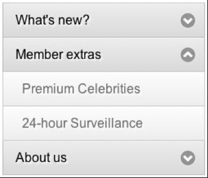</div>
      
            </div><p xmlns:l="http://docbook.sourceforge.net/xmlns/l10n/1.0" xmlns:d="http://docbook.org/ns/docbook" class="title4">Figure 5.2. Open/closed indicators<a id="ch05-013af"></a>
                  <a id="ch05-013f"></a>
                  <a id="ch05-013bf"></a>
               </p></div>

      
            You’ve probably seen this kind of indicator before on the Web (or
      in desktop applications, for that matter). They usually take the form of
      small triangles whose direction serves to indicate whether the menu is
      open or closed. They’re extremely helpful, as they provide a hint to the
      user that there’s hidden information to be revealed.

      
            We’ll use a CSS <a id="ch05-014"></a>sprite
      to add an indicator to our menu; a single image will contain both the
      contracted (down-facing) and expanded (up-facing) arrows for our menu
      sections.

      
            By default, all of the sections are closed, so we show the
      contracted arrow state in our CSS. In our sprite image the contracted
      state is aligned to the top, while the expanded state is 20 pixels below
      the top. We apply this background image to <code class="email">li</code> elements inside the menu, and then remove
      it from deeper nested items:

      
            <div class="toc"><a xmlns:saxon="http://icl.com/saxon" id="d4e4997"></a><div xmlns:l="http://docbook.sourceforge.net/xmlns/l10n/1.0" xmlns:d="http://docbook.org/ns/docbook" class="sitepoint-formal-example-heading"><em class="calibre8" title="chapter_05/03_open_closed_indicators/menus.css (excerpt)">
		
                  <span class="sitepoint-formal-example-filename"><span>chapter_05/03_open_closed_indicators/menus.css</span></span>
        (excerpt)
	</em></div><div class="toc">
        
               

        
               <pre class="programlisting">#menu li {
  cursor: pointer;
  border-bottom: 1px solid #444;
  <span><strong class="calibre9">background: #94C5EB url(arrows.png) no-repeat right top;</strong></span>
}
…
#menu li li {
  cursor: auto;
  border: 0;
  padding: 0 14px;
  background-color:#fff;
  <span><strong class="calibre9">background-image: none;</strong></span>
}</pre>
      
            </div></div>

      
            With our background image in place, we now need to adjust the CSS
      sprite’s position whenever we toggle a menu item. When the menu item
      slides down we show the expanded state, and when it slides up we show
      the contracted state. We’ll make clever use of chaining to apply the
      <code class="email">css</code> action before we drill down to find the
      <code class="email">ul</code> to show or hide:

      
            <div class="toc"><a xmlns:saxon="http://icl.com/saxon" id="d4e5006"></a><div xmlns:l="http://docbook.sourceforge.net/xmlns/l10n/1.0" xmlns:d="http://docbook.org/ns/docbook" class="sitepoint-formal-example-heading"><em class="calibre8" title="chapter_05/03_open_closed_indicators/script.js (excerpt)">
		
                  <span class="sitepoint-formal-example-filename"><span>chapter_05/03_open_closed_indicators/script.js</span></span>
        (excerpt)
	</em></div><div class="toc">
        
               

        
               <pre class="programlisting">$('#menu &gt; li').toggle(function() {
  $(this)
    <span><strong class="calibre9">.css('background-position', 'right -20px')</strong></span>
    .find('ul').slideDown();
}, function() {
  $(this)
    <span><strong class="calibre9">.css('background-position', 'right top')</strong></span>
    .find('ul').slideUp();
});</pre>
      
            </div></div>

      
            <a id="d4e5012"></a>

      
            <a id="d4e5013"></a>

      
            <a id="d4e5014"></a>

      
            <a id="d4e5015"></a>
    
         </div>

    
         <div class="toc" title="Menu Expand on Hover"><div class="toc"><div class="toc"><div class="toc"><h3 class="title2"><a xmlns:saxon="http://icl.com/saxon" id="d4e5016" class="calibre5"></a>Menu Expand on Hover<a id="ch05-015a" class="calibre5"></a>
               <a id="ch05-015" class="calibre5"></a>
            </h3></div></div></div>
      
            

      
            For our next trick, we want to make the menu respond to hover
      events as well as click events. When a user hovers over one of our
      parent menu items, we’ll pause briefly, then expand the menu. Now,
      you’ve already seen enough toggle and hover effects to last a lifetime
      (and don’t worry, there’s plenty more to come!) so we’ll give this one a
      twist. The jQuery <code class="email">hover</code> event fires the instant you
      move your mouse over the target item. <a id="ch05-016"></a>But for this effect we’ll delay the execution so that it
      only fires if the user hovers for a short while. Otherwise, the control
      would be virtually unusable, as it would snap open and closed if you so
      much as grazed it with the mouse.

      
            It’s a subtle but important change—and if you try the menu both
      with and without a delay as follows, you’ll notice that the feel of the
      control is altered dramatically:

      
            <div class="toc"><a xmlns:saxon="http://icl.com/saxon" id="d4e5032"></a><div xmlns:l="http://docbook.sourceforge.net/xmlns/l10n/1.0" xmlns:d="http://docbook.org/ns/docbook" class="sitepoint-formal-example-heading"><em class="calibre8" title="chapter_05/04_menu_expand_on_hover/script.js (excerpt)">
		
                  <span class="sitepoint-formal-example-filename"><span>chapter_05/04_menu_expand_on_hover/script.js</span></span>
        (excerpt)
	</em></div><div class="toc">
        
               

        
               <pre class="programlisting">$('#menu &gt; li').hover(function() {
  $(this).addClass('waiting');
  setTimeout(function() {
    $('#menu .waiting')
      .click()
      .removeClass('waiting');
  }, 600);
}, function() {
  $('#menu .waiting').removeClass('waiting');
});</pre>

        
               <a id="d4e5036"></a>
      
            </div></div>

      
            When the user first mouses over the menu element, we add a class
      called <code class="email">waiting</code> to the menu item,
      then set a timer for 600 milliseconds. If the user moves the mouse away
      from the menu item before the delay concludes, we remove the
      class.

      
            Once the delay expires it looks for a menu item containing the
      <code class="email">waiting</code> 
               <code class="email">class</code> (which will only exist if the user
      hasn’t moved the mouse away). If the user is still waiting, we “click”
      the menu item, causing the effect to fire. This is the first time we’ve
      seen the <a id="ch05-017"></a>
               <code class="email">click</code> action used in this way;
      when called without parameters, it actually fires the click event on the
      targeted element(s), rather than setting up an event handler. Finally,
      once we fire the effect we remove the class—so we’re back to square one.
      We also need to modify the click action we defined earlier. As it is, if
      a user mouses over a menu and then clicks it, the <code class="email">waiting</code> class will cause it to close when the
      timer goes off. We simply need to add the same
      <code class="email">removeClass</code> call to the click handler.

      
            What we’re doing—and we’ve done this before with earlier
      effects—is use classes to provide <a id="ch05-018a"></a>
               <a id="ch05-018"></a>state management. State management is just a fancy way of
      saying we provide the control with a way of remembering what “state” it
      is in. We want to remember if the user has moved away from the menu
      before the delay expires, so we add and remove the <code class="email">waiting</code> 
               <code class="email">class</code> appropriately. Using class names for
      state management is a nifty trick—but it’s certainly not the only (or
      best) way. We’ve already seen the data functionality provided by jQuery,
      which is a great way to store simple state information. For larger and
      more complex controls, we can also integrate state management into the
      widget’s code—as we saw at the end of <a href="ch04.html" title="Chapter 4Images and Slideshows">Chapter 4</a>.
      As always, the method you use is dependent on the circumstance, and on
      what feels simplest to you.<a id="d4e5060"></a>
               <a id="d4e5061"></a>
            
    
         </div>

    
         <div class="toc" title="Drop-down Menus"><div class="toc"><div class="toc"><div class="toc"><h3 class="title2"><a xmlns:saxon="http://icl.com/saxon" id="d4e5062" class="calibre5"></a>Drop-down Menus<a id="ch05-019a" class="calibre5"></a>
               <a id="ch05-019" class="calibre5"></a>
            </h3></div></div></div>
      
            

      
            If you ever had to code a drop-down menu in the old days of the
      Web (using what was at the time referred to as DHTML), you’ll know just
      how harrowing an experience it can be. There’s an abundance of terrible
      scripts lingering online from those days but, thankfully, CSS has since
      stepped in to banish reams of JavaScript spaghetti code to the trash
      heap. That said, there’s still enough edge cases to show us how jQuery
      helps bridge the gaps. The <a href="http://www.alistapart.com/articles/dropdowns">Suckerfish
      Drop-down</a> technique, and subsequent derivatives, provides an
      elegant solution to the problem of drop-down menus.

      
            
               <a id="ch05-020"></a>Suckerfish drop-downs work by carefully styling a list of
      lists into a drop-down structure, and then hiding the child menu items.
      The stylesheet uses a <a id="ch05-021b"></a>
               <a id="ch05-021a"></a>
               <code class="email">:hover</code> pseudo-selector to trigger the
      showing and hiding of the child items. We should always aim to use
      simpler technologies such as CSS when they’re suitable. That said, there
      are some issues with using pure CSS drop-down menus. Really old browsers
      are unable to style the <code class="email">:hover</code> pseudo selector on
      non-link elements, and even for those that can, the showing/hiding
      effect can be a little abrupt.

      
            The Suckerfish drop-downs make an excellent base for enhancement:
      they provide an adequate solution, which can then be improved and
      streamlined with jQuery. In this example, we’ll be adapting the
      Suckerfish technique to work with browsers that have incomplete support
      for <code class="email">:hover</code>. We’ll also make the drop-down effect a
      little sleeker with some jQuery animation; for instance, delaying the
      drop-down from hiding when the user mouses out.

      
            <div class="toc" title="Cross-browser Menus"><div class="toc"><div class="toc"><div class="toc"><h4 class="title3"><a xmlns:saxon="http://icl.com/saxon" id="d4e5085"></a>Cross-browser Menus</h4></div></div></div>
        
               

        
               
                  <a id="ch05-022"></a>First, let’s set up a simple Suckerfish drop-down as our
        baseline. We’ll be using the same markup we used for the expandable
        navigation in <a href="ch05.html#section_expandable_menu" title="Expandable/Collapsible Menus">the section called “Expandable/Collapsible Menus
               
            ”</a>.

        
               The CSS is straight out of the Suckerfish playbook, and will
        mold the unordered list into a simple horizontal menu. The only
        additional aspect to pay attention to is the extra <code class="email">class</code> we’ve attached to the
        <code class="email">:hover</code> CSS declaration. We’ll need this to keep our
        menu drop-down visible when it otherwise wouldn’t be:<a id="d4e5094"></a>
                  <a id="d4e5095"></a>
               

        
               <div class="toc"><a xmlns:saxon="http://icl.com/saxon" id="d4e5096"></a><div xmlns:l="http://docbook.sourceforge.net/xmlns/l10n/1.0" xmlns:d="http://docbook.org/ns/docbook" class="sitepoint-formal-example-heading"><em class="calibre8" title="chapter_05/05_dropdown_menu/menus.css">
		
                     <span class="sitepoint-formal-example-filename"><span>chapter_05/05_dropdown_menu/menus.css</span></span>
                  
	</em></div><div class="toc">
          
                  

          
                  <pre class="programlisting">#container {
  position: relative;
}

#menu {
  position: absolute;
  top: 0;
  right: 0;
}

#menu, #menu ul {
  padding: 0;
  margin: 0;
  list-style: none;
}

#menu li {
  float: left;
  background: #FFF;
}

#menu a {
  display: block;
  padding: 4px;
  width: 10em;
}

#menu li ul {
  position: absolute;
  width: 10em;
  left: -999em;
}

#menu li:hover ul, #menu li ul:hover {
  left:auto;
}</pre>
        
               </div></div>

        
               If you try this on most browsers, you’ll be pleasantly
        surprised: a fully working menu system with no JavaScript! What we
        want to do now is layer some jQuery on top of this effect so that it
        functions in older browsers, and animates a bit more smoothly. Our
        target functionality is illustrated in <a href="ch05.html#fig_dropdown" title="Figure 5.3. Our drop-down menu in action">Figure 5.3</a>.<a id="d4e5102"></a>
               

        
               <div class="toc"><a xmlns:saxon="http://icl.com/saxon" id="fig_dropdown"></a><div class="figure-contents">
          
                  

          
                  <div class="figure-contents"></div>
        
               </div><p xmlns:l="http://docbook.sourceforge.net/xmlns/l10n/1.0" xmlns:d="http://docbook.org/ns/docbook" class="title4">Figure 5.3. Our drop-down menu in action<a id="ch05-022f"></a>
                  </p></div>

        
               So how do we replicate this effect using jQuery? “Simple,” you
        might say. “Just add a hover action with a slide-down effect.” And
        you’d be right: adding a simple hover function would give us the
        desired behavior, but there’s a problem. What happens when we
        implement the same functionality in both our CSS and our script? Who
        wins in the fight between CSS <a id="ch05-024b"></a>
                  <a id="ch05-024a"></a>
                  <code class="email">:hover</code> and jQuery <a id="ch05-025"></a>
                  <code class="email">hover</code>? It’s messy—they’re very
        evenly matched!

        
               One obvious workaround would be to override the CSS class in our
        hover event handler. But this will fail, as you’re unable (currently)
        to target <a id="ch05-026"></a>
                  <a id="ch05-026b"></a>pseudo selectors in jQuery to set CSS <a id="ch05-026a"></a>properties:

        
               <pre class="programlisting">$('#nav li:hover ul').css('left', '-999em'); // doesn’t work!<a id="d4e5134"></a>
                  <a id="d4e5135"></a>
               </pre>

        
               That puts us in a quandary: how can we keep the goodness of
        Suckerfish CSS menus, but still apply our jQuery enhancements? One
        solution would be to carefully undo the CSS properties as we hover—but
        an easier way is to take over the child menu item’s CSS properties,
        regardless of whether we’re hovering or not:

        
               <div class="toc"><a xmlns:saxon="http://icl.com/saxon" id="d4e5137"></a><div xmlns:l="http://docbook.sourceforge.net/xmlns/l10n/1.0" xmlns:d="http://docbook.org/ns/docbook" class="sitepoint-formal-example-heading"><em class="calibre8" title="chapter_05/05_dropdown_menu/script.js (excerpt)">
		
                     <span class="sitepoint-formal-example-filename"><span>chapter_05/05_dropdown_menu/script.js</span></span>
          (excerpt)
	</em></div><div class="toc">
          
                  

          
                  <pre class="programlisting">$('#menu li ul').css({
  display: "none",
  left: "auto"
});
$('#menu li').hover(function() {
  $(this)
    .find('ul')
    .stop(true, true)
    .slideDown('fast');
}, function() {
  $(this)
    .find('ul')
    .stop(true,true)
    .fadeOut('fast');
});<a id="d4e5141"></a>
                  </pre>
        
               </div></div>

        
               The first part of this script overrides the CSS we set earlier
        and hides the submenus using <code class="email">display: "none"</code>. When
        the user hovers over a list item, we find the related child list
        container and display it. Here we’ve used
        <code class="email">slideDown</code> and
        <code class="email">fadeOut</code>, but you’ll be able to come up with
        some wacky easing options and CSS background sprites to liven it up.
        The <code class="email">stop(true, true)</code> command, as we saw in <a href="ch03.html#section_animated_nav" title="Animated Navigation">the section called “Animated Navigation
               
            ” in Chapter 3</a>, ensures that the menu will refrain
        from queuing up animations if we move the mouse around quickly. If you
        like, you could even add in a <code class="email">delay</code>, from the
        same chapter.

        
               
                  <a id="ch05-027"></a>The best aspect of this menu control is that when a user
        visits the site with JavaScript disabled, the Suckerfish drop-downs
        still work nicely, albeit without the animation effects.
      
            </div>

      
            <div class="toc" title="Hover Intent"><div class="toc"><div class="toc"><div class="toc"><h4 class="title3"><a xmlns:saxon="http://icl.com/saxon" id="d4e5152"></a>Hover Intent<a id="ch05-028"></a>
                  <a id="ch05-028a"></a>
                  <a id="ch05-028b"></a>
               </h4></div></div></div>
        
               

        
               We’ve seen a few effects that are triggered by the <a id="ch05-029a"></a>
                  <a id="ch05-029"></a>
                  <code class="email">mouseover</code> event—and you may have
        noticed that they can sometimes feel a bit too eager to activate. The
        very instant you pass your mouse over a target element the effect
        springs to life, even if you’re just passing through. This is
        excellent for making fluid animated effects, but sometimes we’re after
        a different result. With our drop-down menus, the false start can
        appear unnecessary and distracting. We need a method of delaying the
        effect until we’re sure that the user really wants to activate the
        target element.

        
               Earlier, we saw a method for achieving this by setting a timer
        when the user moves over the element. But this has a few side effects.
        For example, if you have a small timer and a large target area, the
        user might fail to make it all the way across the element before the
        timer expires.

        
               
                  <a id="ch05-030"></a>Brian Cherne implemented a nice workaround for this
        issue, in the form of the <a href="http://cherne.net/brian/resources/jquery.hoverIntent.html">Hover
        Intent plugin.</a> Hover Intent has some smarts built into it to
        calculate the speed of the mouse as it moves across the elements. The
        effect will only kick in if the mouse slows down enough for the plugin
        to think the user <span><em class="calibre8">intends</em></span> to stop there.

        
               Once you’ve included the plugin, you can use it wherever you’d
        normally use the <a id="ch05-031"></a>
                  <code class="email">hover</code> action. As an example, if
        we wanted to add a delay to our drop-down menus from the previous
        section, we’d just need to replace the command
        <code class="email">hover</code> with the command
        <code class="email">hoverIntent</code>:

        
               <div class="toc"><a xmlns:saxon="http://icl.com/saxon" id="d4e5185"></a><div xmlns:l="http://docbook.sourceforge.net/xmlns/l10n/1.0" xmlns:d="http://docbook.org/ns/docbook" class="sitepoint-formal-example-heading"><em class="calibre8" title="chapter_05/06_dropdown_with_hover_intent/script.js (excerpt)">
		
                     <span class="sitepoint-formal-example-filename"><span>chapter_05/06_dropdown_with_hover_intent/script.js</span></span>
          (excerpt)
	</em></div><div class="toc">
          
                  

          
                  <pre class="programlisting">$('#menu li').<span><strong class="calibre9">hoverIntent</strong></span>(function() {
  …
}, function() {
  …
});</pre>
        
               </div></div>

        
               The menu will only reveal itself when it thinks a user wants to
        see it. The best way to experience what this plugin is doing is to
        compare this example to the previous one, dragging the mouse
        horizontally across the menu. In our previous example, the menus will
        slide open in a wave as you move across them; when using
        <code class="email">hoverIntent</code>, the menus will only slide open
        when the mouse comes to rest.

        
               As with most plugins, the documentation outlines the handful of
        options you can specify to fine-tune the effect, so be sure to read
        through it if you plan on using this functionality.<a id="d4e5193"></a>
                  <a id="d4e5194"></a>
                  <a id="d4e5195"></a>
                  <a id="d4e5196"></a>
                  <a id="d4e5197"></a>
               
      
            </div>
    
         </div>
  
      </div>

  
      <div class="toc" title="Accordion Menus"><div class="toc"><div class="toc"><div class="toc"><h2 class="title1"><a xmlns:saxon="http://icl.com/saxon" id="d4e5198" class="calibre5"></a>Accordion Menus<a id="ch05-032x" class="calibre5"></a>
         </h2></div></div></div>
    
         

    
         
            <a id="ch05-032"></a>Accordion menus are named after the musical instrument, in
    the way the expansion of one area leads to the contraction of another.
    Typically, accordions are fixed so that one—and only one—of the areas must
    be visible at all times, though some accordions let you collapse an
    already open area so that all items are hidden.

    
         <div class="toc" title="A Simple Accordion"><div class="toc"><div class="toc"><div class="toc"><h3 class="title2"><a xmlns:saxon="http://icl.com/saxon" id="d4e5208" class="calibre5"></a>A Simple Accordion<a id="ch05-033" class="calibre5"></a>
            </h3></div></div></div>
      
            

      
            Creating accordions can be trickier than you’d expect. We saw
      earlier how a simple expanding and collapsing menu system could be
      implemented in just a few lines of jQuery code. It’s therefore
      reasonable for you to assume that adding a constraint (that only one
      menu element can be open at any time) would be straightforward. Although
      the basic implementation is indeed quite simple (this is jQuery, after
      all!), there are some caveats involved in enforcing more complex
      constraints that you should be aware of.

      
            For this example, we’ll be building a simple accordion to group
      celebrities according to their popularity; this will allow us to save
      quite a bit of precious screen real estate on the StarTrackr! site. The
      result we’re aiming for is illustrated in <a href="ch05.html#fig_accordion" title="Figure 5.4. A simple accordion control">Figure 5.4</a>.

      
            <div class="toc"><a xmlns:saxon="http://icl.com/saxon" id="fig_accordion"></a><div class="figure-contents">
        
               

        
               <div class="figure-contents">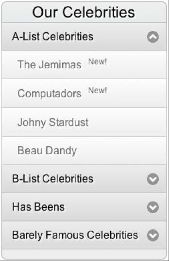</div>
      
            </div><p xmlns:l="http://docbook.sourceforge.net/xmlns/l10n/1.0" xmlns:d="http://docbook.org/ns/docbook" class="title4">Figure 5.4. A simple accordion control<a id="ch05-033f"></a>
               </p></div>

      
            You can set up an accordion using virtually any structure of HTML
      markup; all you really need is a set of clearly identifiable headers,
      each associated with a block of content. For this example, we’ll be
      using a set of nested lists, like this:

      
            <div class="toc"><a xmlns:saxon="http://icl.com/saxon" id="d4e5225"></a><div xmlns:l="http://docbook.sourceforge.net/xmlns/l10n/1.0" xmlns:d="http://docbook.org/ns/docbook" class="sitepoint-formal-example-heading"><em class="calibre8" title="chapter_05/07_simple_accordion/index.html (excerpt)">
		
                  <span class="sitepoint-formal-example-filename"><span>chapter_05/07_simple_accordion/index.html</span></span>
        (excerpt)
	</em></div><div class="toc">
        
               

        
               <pre class="programlisting">&lt;ul&gt;
  &lt;li class="active"&gt;
    "A" List Celebrities
    &lt;ul&gt;
      &lt;li&gt;&lt;a href="#"&gt;Computadors&lt;/a&gt; &amp;nbsp;New!&lt;/li&gt;
      &lt;li&gt;&lt;a href="#"&gt;Johnny Stardust&lt;/a&gt;&lt;/li&gt;
      &lt;li&gt;&lt;a href="#"&gt;Beau Dandy&lt;/a&gt;&lt;/li&gt;
    &lt;/ul&gt;
  &lt;/li&gt;
  &lt;li&gt;
    "B" List Celebrities
    &lt;ul&gt;
      &lt;li&gt;&lt;a href="#"&gt;Sinusoidal Tendancies&lt;/a&gt;&lt;/li&gt;
      &lt;li&gt;&lt;a href="#"&gt;Steve Extreme&lt;/a&gt;&lt;/li&gt;
    &lt;/ul&gt;
  &lt;/li&gt;
  …
&lt;/ul&gt; </pre>
      
            </div></div>

      
            This list markup is an ideal HTML structure for a menu, but there
      are certainly other options; you could just as easily use a set of
      nested <code class="email">div</code>s, with header elements
      providing the title of each section. Just about any structure is
      suitable, as long as it’s consistent and allows you to select all the
      header triggers and related content. We’ve styled the list with some
      CSS, which you can consult in the sample code archive.

      
            When our page loads, all our content areas are visible. By now you
      should know what’s coming next: we need to hide all the content, except
      for our default item:

      
            <div class="toc"><a xmlns:saxon="http://icl.com/saxon" id="d4e5232"></a><div xmlns:l="http://docbook.sourceforge.net/xmlns/l10n/1.0" xmlns:d="http://docbook.org/ns/docbook" class="sitepoint-formal-example-heading"><em class="calibre8" title="chapter_05/07_simple_accordion/script.js (excerpt)">
		
                  <span class="sitepoint-formal-example-filename"><span>chapter_05/07_simple_accordion/script.js</span></span>
        (excerpt)
	</em></div><div class="toc">
        
               

        
               <pre class="programlisting">$('#celebs ul &gt; li ul')
  .click(function(event) {
    event.stopPropagation();
  })
  .filter(':not(:first)')
  .hide();</pre>
      
            </div></div>

      
            We’ve done this slightly differently from before. In this case
      we’ve also pre-empted an issue that we’ll have with <a id="ch05-034"></a>
               <a id="ch05-034a"></a>event bubbling (covered in <a href="ch05.html#section_event_propagation" title="Event Propagation">the section called “Event Propagation
                  
               ”</a>). This sort of statement really
      shows the power of jQuery: we start by attaching an <a id="ch05-0349"></a>event listener to every content area, then filter down our
      selection to exclude the first area, and hide everything that’s
      left.

      
            The <a id="ch05-035"></a>
               <code class="email">filter</code> command is a really handy
      way of narrowing down a selection mid-statement. Any elements that don’t
      match the criteria passed to it are discarded from the selection and are
      no longer affected by subsequent jQuery commands. You can specify the
      criteria as a selector or as a function (see the note below). We’ve used
      filter selectors in the previous example (<code class="email">:not</code> and
      <code class="email">:first</code>), but you can use any jQuery selector to help
      you find the elements you’re after.

      
            
               <a id="ch05-036"></a>
               <a id="ch05-036a"></a>
               <code class="email">:not</code> is a neat utility selector, as it
      selects the opposite of whatever follows it in parentheses. So
      <code class="email">$(':not(p)')</code> will select every element that’s not a
      paragraph, and <code class="email">$('p:not(.active)')</code> will select
      paragraphs without the <code class="email">active</code>
      class.

      
            And where the <code class="email">filter</code> method does a
      smashing job of removing elements from a selection, we can do the
      reverse with <a id="ch05-037a"></a>
               <a id="ch05-037"></a>
               <code class="email">add</code>, which appends new elements
      to the selection. By combining <code class="email">filter</code> and
      <code class="email">add</code> you can do an awful lot of processing in a
      single jQuery chain, adding and removing elements as necessary along the
      way.

      
            <div class="tip" title="Note: Advanced Use of filter"><h3 class="title2">Note: Advanced Use of <code class="literal">filter</code>
                  
               </h3>
        
               

        
               Sometimes you’ll need to perform filters involving more
        sophisticated criteria; in these cases you can use a custom function
        to define your rules. The function is processed for each element in
        the jQuery selection. If it returns <code class="email">true</code>, the
        element stays in the selection; otherwise, it’s scrapped. As an
        example, let’s keep every paragraph element that’s either the third in
        the selection or has the <code class="email">class</code>
        
                  <code class="email">active</code>:

        
               <pre class="programlisting">$('p').filter(function(index) {
  return index == 2 || $(this).hasClass('active');
});</pre>

        
               Notice that we have access to the zero-based <a id="ch05-039"></a>index of each element in the selection, and that the
        scope is of the current element? That’s why we can refer to it with
        <code class="email">$(this)</code>. You can include any amount of processing
        in your criteria function—just be sure to return
        <code class="email">true</code> if you want to hold on to the
        element.<a id="d4e5292"></a>
               
      
            </div>

      
            The code for the accordion effect needs to close any items that
      are open (as there should only ever be one open at a time), then open
      the item we clicked on. But there’s a problem with this logic: if we
      click on an item that’s already open, it will unnecessarily slide up and
      down. So first we need to check that the item we clicked on is already
      open:

      
            <div class="toc"><a xmlns:saxon="http://icl.com/saxon" id="d4e5294"></a><div xmlns:l="http://docbook.sourceforge.net/xmlns/l10n/1.0" xmlns:d="http://docbook.org/ns/docbook" class="sitepoint-formal-example-heading"><em class="calibre8" title="chapter_05/07_simple_accordion/script.js (excerpt)">
		
                  <span class="sitepoint-formal-example-filename"><span>chapter_05/07_simple_accordion/script.js</span></span>
        (excerpt)
	</em></div><div class="toc">
        
               

        
               <pre class="programlisting">$('#celebs ul &gt; li').click(function() {
  var selfClick = $(this).find('ul:first').is(':visible');<a xmlns:saxon="http://icl.com/saxon" id="co_simple_accordion_1"></a><span xmlns:l="http://docbook.sourceforge.net/xmlns/l10n/1.0" xmlns:d="http://docbook.org/ns/docbook" class="sitepoint-callout-bug">(1)</span>
  if (!selfClick) {<a xmlns:saxon="http://icl.com/saxon" id="co_simple_accordion_2"></a><span xmlns:l="http://docbook.sourceforge.net/xmlns/l10n/1.0" xmlns:d="http://docbook.org/ns/docbook" class="sitepoint-callout-bug">(2)</span>
    $(this)
      .parent()
      .find('&gt; li ul:visible')
      .slideToggle();
  } 
  $(this)
    .find('ul:first')
    .slideToggle();<a xmlns:saxon="http://icl.com/saxon" id="co_simple_accordion_3"></a><span xmlns:l="http://docbook.sourceforge.net/xmlns/l10n/1.0" xmlns:d="http://docbook.org/ns/docbook" class="sitepoint-callout-bug">(3)</span>
});</pre>
      
            </div></div>

      
            Let’s break this code down:

      
            <div class="toc"><table border="0" summary="Callout list" class="calibre13"><tr class="calibre14"><td valign="top" class="calibre15"><p class="calibre16"><a href="#co_simple_accordion_1"><span xmlns:l="http://docbook.sourceforge.net/xmlns/l10n/1.0" xmlns:d="http://docbook.org/ns/docbook" class="sitepoint-callout-bug">(1)</span></a> </p></td><td valign="top" class="calibre15">
          
                  We check to make sure if the nested <code class="email">ul</code> is <a id="ch05-040"></a>visible using the <code class="email">.is('visible')</code>
          construct, and store that result in a variable named
          <code class="email">selfClick</code> (which will be <code class="email">true</code>
          if the user has clicked on a section that’s already open).
        
               </td></tr><tr class="calibre14"><td valign="top" class="calibre15"><p class="calibre16"><a href="#co_simple_accordion_2"><span xmlns:l="http://docbook.sourceforge.net/xmlns/l10n/1.0" xmlns:d="http://docbook.org/ns/docbook" class="sitepoint-callout-bug">(2)</span></a> </p></td><td valign="top" class="calibre15">
          
                  We use the JavaScript <a id="ch05-041a"></a>
                     <a id="ch05-041"></a>
                     <code class="email">!</code> operator in an
          <code class="email">if</code> statement to hide the visible section if it’s
          not the one that was clicked on. <code class="email">!</code> means “not,”
          so the nested block of code will only be run if
          <code class="email">selfClick</code> is not <code class="email">true</code>.
        
               </td></tr><tr class="calibre14"><td valign="top" class="calibre15"><p class="calibre16"><a href="#co_simple_accordion_3"><span xmlns:l="http://docbook.sourceforge.net/xmlns/l10n/1.0" xmlns:d="http://docbook.org/ns/docbook" class="sitepoint-callout-bug">(3)</span></a> </p></td><td valign="top" class="calibre15">
          
                  Finally, we toggle the state of the item we clicked on: it
          slides up if it’s open, and down if it’s closed.
        
               </td></tr></table></div>

      
            The way we’ve coded our solution, it’s possible for users to close
      the open section of the accordion, thus collapsing it entirely. If you’d
      rather enforce the rule that one item must always remain visible, you
      could adjust the code so that clicking on the open item will have no
      effect. This is quite simply done with a little basic JavaScript; if
      <code class="email">selfClick</code> evaluates to <code class="email">true</code>,
      we simply exit the function using the JavaScript
      <code class="email">return</code> keyword:

      
            <div class="toc"><a xmlns:saxon="http://icl.com/saxon" id="d4e5329"></a><div xmlns:l="http://docbook.sourceforge.net/xmlns/l10n/1.0" xmlns:d="http://docbook.org/ns/docbook" class="sitepoint-formal-example-heading"><em class="calibre8" title="chapter_05/08_simple_accordion_variant/script.js (excerpt)">
		
                  <span class="sitepoint-formal-example-filename"><span>chapter_05/08_simple_accordion_variant/script.js</span></span>
        (excerpt)
	</em></div><div class="toc">
        
               

        
               <pre class="programlisting">$('#celebs ul &gt; li').click(function() {
  var selfClick = $(this).find('ul:first').is(':visible');
  if (selfClick) {
    return;
  }
  $(this)
    .parent()
    .find('&gt; li ul:visible')
    .slideToggle();
  $(this)
    .find('ul:first')
    .stop(true, true)
    .slideToggle();
});<a id="d4e5333"></a>
               </pre>
      
            </div></div>
    
         </div>

    
         <div class="toc" title="Multiple-level Accordions"><div class="toc"><div class="toc"><div class="toc"><h3 class="title2"><a xmlns:saxon="http://icl.com/saxon" id="d4e5334" class="calibre5"></a>Multiple-level Accordions<a id="ch05-042" class="calibre5"></a>
            </h3></div></div></div>
      
            

      
            Earlier, we saw that you should set up your accordion HTML
      structure consistently—and here’s why! If we’ve been specific enough
      with our jQuery selectors, adding another level to the accordion is as
      simple as including the next level in our event handlers. First of all,
      we add in the second level of menu items. We use exactly the same
      structure as the first level, but nest it inside the first level list
      item:

      
            <div class="toc"><a xmlns:saxon="http://icl.com/saxon" id="d4e5340"></a><div xmlns:l="http://docbook.sourceforge.net/xmlns/l10n/1.0" xmlns:d="http://docbook.org/ns/docbook" class="sitepoint-formal-example-heading"><em class="calibre8" title="chapter_05/09_multi_level_accordion/index.html (excerpt)">
		
                  <span class="sitepoint-formal-example-filename"><span>chapter_05/09_multi_level_accordion/index.html</span></span>
        (excerpt)
	</em></div><div class="toc">
        
               

        
               <pre class="programlisting">&lt;ul&gt;
  &lt;li class="active"&gt;"A" List Celebrities
    &lt;ul&gt;
      &lt;li&gt;&lt;a href="#"&gt;Computadors&lt;/a&gt; &amp;nbsp;New!&lt;/li&gt;
      &lt;li&gt;Rising Stars
        &lt;ul&gt;
          &lt;li&gt;&lt;a href="#"&gt;Johnny Stardust&lt;/a&gt;&lt;/li&gt;
          &lt;li&gt;&lt;a href="#"&gt;Beau Dandy&lt;/a&gt;&lt;/li&gt;
        &lt;/ul&gt;
      &lt;/li&gt;
      &lt;li&gt;Falling Stars
        &lt;ul&gt;
          &lt;li&gt;&lt;a href="#"&gt;Kellie Kelly&lt;/a&gt;&lt;/li&gt;
          &lt;li&gt;&lt;a href="#"&gt;Darth Fader&lt;/a&gt;&lt;/li&gt;
          …</pre>
      
            </div></div>

      
            For our single-level accordion, we attached our accordion code to
      all the first-level children of the root list by using this code:
      <code class="email">$('#accordion &gt; li').click(…)</code>. As the structure of
      our nested list is exactly the same as before, we need to apply the same
      code to the nested elements, which we can accomplish simply by adding
      them to the selector:

      
            <div class="toc"><a xmlns:saxon="http://icl.com/saxon" id="d4e5346"></a><div xmlns:l="http://docbook.sourceforge.net/xmlns/l10n/1.0" xmlns:d="http://docbook.org/ns/docbook" class="sitepoint-formal-example-heading"><em class="calibre8" title="chapter_05/09_multi_level_accordion/script.js (excerpt)">
		
                  <span class="sitepoint-formal-example-filename"><span>chapter_05/09_multi_level_accordion/script.js</span></span>
        (excerpt)
	</em></div><div class="toc">
        
               

        
               <pre class="programlisting">$('#accordion &gt; li, <span><strong class="calibre9">#accordion &gt; li &gt; ul &gt; li'</strong></span>).click(…);</pre>
      
            </div></div>

      
            If you follow that selector chain, you’ll see that we’re adding
      the accordion code to the correct list items. We could have just added
      it to every list item, but it may lead to strange behavior with nested
      content, depending on your HTML structure.

      
            Another option would be to select the
      <code class="email">#accordion</code>’s direct children <code class="email">li</code>s; then find any descendant lists and items,
      and use <code class="email">addSelf</code> to bring those first child
      <code class="email">li</code>s back into the
      equation:<pre class="programlisting">$('#accordion &gt; li<span><strong class="calibre9">).find('&gt; ul &gt; li').addSelf()</strong></span>.click(…);</pre>
            

      
            It can be easy to miss that leading <code class="email">&gt;</code> in the
      <code class="email">find</code>, though, so see which style you prefer. In
      either event, the resulting menu is shown in <a href="ch05.html#fig_multi_accordion" title="Figure 5.5. A multiple-level accordion menu">Figure 5.5</a>.

      
            <div class="toc"><a xmlns:saxon="http://icl.com/saxon" id="fig_multi_accordion"></a><div class="figure-contents">
        
               

        
               <div class="figure-contents">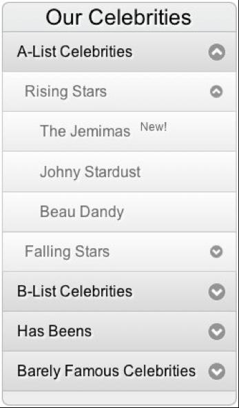</div>
      
            </div><p xmlns:l="http://docbook.sourceforge.net/xmlns/l10n/1.0" xmlns:d="http://docbook.org/ns/docbook" class="title4">Figure 5.5. A multiple-level accordion menu<a id="ch05-042f"></a>
               </p></div>

      
            If you want to add more levels to the accordion, just repeat this
      process. If the long selectors get out of hand, you could add an extra
      class to the root of each level; any more than a few levels, though, and
      perhaps there are more appropriate controls to better present your
      information, rather than accordions (see <a href="ch08.html" title="Chapter 8Lists, Trees, and Tables">Chapter 8</a>).<a id="d4e5373"></a>
            
    
         </div>

    
         <div class="toc" title="jQuery UI Accordion"><div class="toc"><div class="toc"><div class="toc"><h3 class="title2"><a xmlns:saxon="http://icl.com/saxon" id="d4e5374" class="calibre5"></a>jQuery UI Accordion<a id="ch05-043" class="calibre5"></a>
               <a id="ch05-043a" class="calibre5"></a>
            </h3></div></div></div>
      
            

      
            As we’ve seen, it’s easy to create a fairly complete accordion
      control from scratch using jQuery. However, the jQuery UI library also
      contains an accordion control, which not only animates consistently, but
      includes an impressive range of options, and allows your accordion to
      synchronize animation in different directions—that’s no mean feat. The
      options include changing icons, triggering on
      <code class="email">mouseover</code>, and reacting in specific ways to the
      accordion’s containing element (for example, you can choose to let the
      content areas have a <code class="email">fixed</code> height or an
      <code class="email">auto</code> height). And as if that weren’t enough, it’s
      also fully themed.

      
            An example of the jQuery UI accordion, using the Sunny theme, can
      be seen in <a href="ch05.html#fig_ui_accordion" title="Figure 5.6. jQuery UI accordion control, with the Sunny theme">Figure 5.6</a>.

      
            <div class="toc"><a xmlns:saxon="http://icl.com/saxon" id="fig_ui_accordion"></a><div class="figure-contents">
        
               

        
               <div class="figure-contents">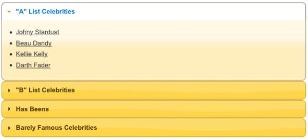</div>
      
            </div><p xmlns:l="http://docbook.sourceforge.net/xmlns/l10n/1.0" xmlns:d="http://docbook.org/ns/docbook" class="title4">Figure 5.6. jQuery UI accordion control, with the Sunny theme<a id="ch05-043f"></a>
                  <a id="ch05-043af"></a>
               </p></div>

      
            Like our custom accordion, the markup for the jQuery UI accordion
      requires pairs of headers and content elements. By default, it assumes
      that the headers are link tags and that the content immediately follows
      them; however, it will be confused if the content includes links, so
      it’s usually best to specify a selector to help it determine which part
      of your content is the title:

      
            <div class="toc"><a xmlns:saxon="http://icl.com/saxon" id="d4e5400"></a><div xmlns:l="http://docbook.sourceforge.net/xmlns/l10n/1.0" xmlns:d="http://docbook.org/ns/docbook" class="sitepoint-formal-example-heading"><em class="calibre8" title="chapter_05/10_jquery_ui_accordion/script.js (excerpt)">
		
                  <span class="sitepoint-formal-example-filename"><span>chapter_05/10_jquery_ui_accordion/script.js</span></span>
        (excerpt)
	</em></div><div class="toc">
        
               

        
               <pre class="programlisting">$('#accordion').accordion({<span><strong class="calibre9">header: 'h3'</strong></span>});</pre>
      
            </div></div>

      
            This is all the code you’ll need to turn your content into a fully
      functional accordion, as long as the <code class="email">h3</code>’s next sibling is the content pane you want
      to hide or show.

      
            The accordion also provides functionality to programmatically
      interact with the control. For example, you can open a particular
      content pane using the <code class="email">activate</code> option, along
      with the index of the pane you want to open. To open the third pane
      (remember, indexes start from zero), you’d write the following:

      
            <div class="toc"><a xmlns:saxon="http://icl.com/saxon" id="d4e5409"></a><div xmlns:l="http://docbook.sourceforge.net/xmlns/l10n/1.0" xmlns:d="http://docbook.org/ns/docbook" class="sitepoint-formal-example-heading"><em class="calibre8" title=":chapter_05/10_jquery_ui_accordion/script.js (excerpt)">
		
                  <span class="sitepoint-formal-example-filename"><span>:chapter_05/10_jquery_ui_accordion/script.js</span></span>
        (excerpt)
	</em></div><div class="toc">
        
               

        
               <pre class="programlisting">$("#accordion").accordion('activate', 2);</pre>
      
            </div></div>

      
            There are many other options available for configuring and
      interacting with the accordion, and these are well documented on the
      <a href="http://jqueryui.com/demos/accordion/">jQuery UI
      site.</a>
            

      
            Using the jQuery UI control comes at a significant cost in terms
      of file size and bandwidth use compared with our custom control, but if
      you require advanced functionality and prefer to avoid spending the time
      to implement it yourself, it can be a viable option.<a id="d4e5416"></a>
               <a id="d4e5417"></a>
            
    
         </div>
  
      </div>

  
      <div class="toc" title="Tabs"><div class="toc"><div class="toc"><div class="toc"><h2 class="title1"><a xmlns:saxon="http://icl.com/saxon" id="d4e5418" class="calibre5"></a>Tabs</h2></div></div></div>
    
         

    
         
            <a id="ch05-044x"></a>
            <a id="ch05-044"></a>Tabs provide a way to group content logically, and have
    become a staple of many desktop applications’ interfaces. They’re also
    common on the Web, if you count top-level navigation elements styled to
    <span><em class="calibre8">look</em></span> like tabs. However, in the world of JavaScript,
    tabs are generally used to break content into multiple sections that can
    be swapped in order to save space.

    
         <div class="toc" title="Basic Tabs"><div class="toc"><div class="toc"><div class="toc"><h3 class="title2"><a xmlns:saxon="http://icl.com/saxon" id="d4e5429" class="calibre5"></a>Basic Tabs<a id="ch05-045" class="calibre5"></a>
            </h3></div></div></div>
      
            

      
            Our simple tabs have all the content of the page preloaded—all we
      need to do is hide and show as required. If you’ve been following this
      book from the beginning, you can probably take a good guess at how to
      approach this.

      
            We’ll break the tabs control into two components: the tab
      navigation and a content area. This lets us have an acceptable solution
      for browsers that are without support for JavaScript: a simple list of
      anchor links to elements on the page. It might look less spiffy than our
      cool tabs, but it’s perfectly functional and provides access to all the
      same content. First, we’ll set up our tab contents as a simple
      collection of <code class="email">div</code> elements:

      
            <div class="toc"><a xmlns:saxon="http://icl.com/saxon" id="d4e5437"></a><div xmlns:l="http://docbook.sourceforge.net/xmlns/l10n/1.0" xmlns:d="http://docbook.org/ns/docbook" class="sitepoint-formal-example-heading"><em class="calibre8" title="chapter_05/11_simple_tabs/index.html (excerpt)">
		
                  <span class="sitepoint-formal-example-filename"><span>chapter_05/11_simple_tabs/index.html</span></span>
        (excerpt)
	</em></div><div class="toc">
        
               

        
               <pre class="programlisting">&lt;div id="info"&gt;
  &lt;p id="intro"&gt;
    Welcome to &lt;strong&gt;StarTrackr!&lt;/strong&gt; the planet's premier …
  &lt;/p&gt;
  &lt;p id="about"&gt;
    StarTrackr! was founded in early 2009 when a young …
  &lt;/p&gt;
  &lt;p id="disclaimer"&gt;
    Disclaimer! This service is not intended for those …
  &lt;/p&gt;
&lt;/div&gt;</pre>
      
            </div></div>

      
            Next, we need to create our tab navigation bar. As with so many
      controls and effects, it’s the overall illusion that’s important. An
      unordered list of links will do nicely, but we’ll style them to look
      like tabs:

      
            <div class="toc"><a xmlns:saxon="http://icl.com/saxon" id="d4e5442"></a><div xmlns:l="http://docbook.sourceforge.net/xmlns/l10n/1.0" xmlns:d="http://docbook.org/ns/docbook" class="sitepoint-formal-example-heading"><em class="calibre8" title="chapter_05/11_simple_tabs/index.html (excerpt)">
		
                  <span class="sitepoint-formal-example-filename"><span>chapter_05/11_simple_tabs/index.html</span></span>
        (excerpt)
	</em></div><div class="toc">
        
               

        
               <pre class="programlisting">&lt;ul id="info-nav"&gt;
  &lt;li&gt;&lt;a href="#intro"&gt;Intro&lt;/a&gt;&lt;/li&gt;
  &lt;li&gt;&lt;a href="#about"&gt;About Us&lt;/a&gt;&lt;/li&gt;
  &lt;li&gt;&lt;a href="#disclaimer"&gt;Disclaimer&lt;/a&gt;&lt;/li&gt;
&lt;/ul&gt;</pre>
      
            </div></div>

      
            We’ve styled the links with CSS to have a tab-like appearance, but
      there are dozens of different ways of accomplishing this, so use
      whatever you’re familiar with or what seems most sensible. We’ve opted
      for extremely basic styles, since what we want to focus on is the
      functionality.

      
            The first task we’ll do (after our document’s ready) is hide all
      the tabs except the first one—this will be our default tab. We could do
      this by hiding all the panes, and then showing the first one, like
      this:

      
            <pre class="programlisting">$('#info p').hide().eq(0).show();</pre>

      
            But this makes jQuery do more work than is necessary; we want to
      avoid hiding a tab only to show it again straight away. Instead, we can
      be more specific with our selector; we can combine filters to select
      everything except the first element:

      
            <div class="toc"><a xmlns:saxon="http://icl.com/saxon" id="d4e5450"></a><div xmlns:l="http://docbook.sourceforge.net/xmlns/l10n/1.0" xmlns:d="http://docbook.org/ns/docbook" class="sitepoint-formal-example-heading"><em class="calibre8" title="chapter_05/11_simple_tabs/script.js (excerpt)">
		
                  <span class="sitepoint-formal-example-filename"><span>chapter_05/11_simple_tabs/script.js</span></span>
        (excerpt)
	</em></div><div class="toc">
        
               

        
               <pre class="programlisting">$('#info p:not(:first)').hide();</pre>
      
            </div></div>

      
            The important point is that once the page loads, only one tab
      content pane is displayed to the user. The code to switch tabs is
      straightforward, and quite similar to the other hide/show controls we’ve
      built so far:

      
            <div class="toc"><a xmlns:saxon="http://icl.com/saxon" id="d4e5455"></a><div xmlns:l="http://docbook.sourceforge.net/xmlns/l10n/1.0" xmlns:d="http://docbook.org/ns/docbook" class="sitepoint-formal-example-heading"><em class="calibre8" title="chapter_05/11_simple_tabs/script.js (excerpt)">
		
                  <span class="sitepoint-formal-example-filename"><span>chapter_05/11_simple_tabs/script.js</span></span>
        (excerpt)
	</em></div><div class="toc">
        
               

        
               <pre class="programlisting">$('#info-nav li').click(function(event) {
  event.preventDefault();
  $('#info p').hide();
  $('#info-nav .current').removeClass("current");
  $(this).addClass('current');
  
  var clicked = $(this).find('a:first').attr('href');
  $('#info ' + clicked).fadeIn('fast');
}).eq(0).addClass('current');</pre>
      
            </div></div>

      
            There’s two peculiar aspects worth pointing out. Firstly, to
      select the content pane corresponding to the clicked link, we’re joining
      the <code class="email">href</code> attribute of the link
      directly to our selector using the JavaScript <a id="ch05-46"></a>
               <a id="ch05-46a"></a>
               <code class="email">+</code> operator. This only works because
      anchor links use the <a id="ch05-047"></a>
               <a id="ch05-047a"></a>
               <a id="ch05-047b"></a>hash symbol (<code class="email">#</code>) to identify their
      targets, and jQuery also uses the hash symbol to select elements by
      <code class="email">id</code>. This is pure coincidence, but
      it’s very fortunate for us as there’s no need to parse the text or use
      regular expressions to create our selector. Secondly, you’ll notice that
      we call <code class="email">preventDefault</code> as early in the method
      as possible. Here we’re ensuring that if there’s a problem with the
      code, at least the default link will be prevented. Small comfort, but
      comfort nonetheless!

      
            After we’ve attached the click handler, we filter our navigation
      list to just the first element using the <a id="ch05-048b"></a>
               <a id="ch05-048a"></a>
               <code class="email">.eq</code> selector and add the <code class="email">current</code> class to it. In our example the first
      tab is the default tab; if you want a different tab to be first, you
      need to change the 0 (as it’s a zero-based index) to the one you’d
      prefer.<a id="d4e5489"></a>
            
    
         </div>

    
         <div class="toc" title="jQuery UI Tabs"><div class="toc"><div class="toc"><div class="toc"><h3 class="title2"><a xmlns:saxon="http://icl.com/saxon" id="d4e5490" class="calibre5"></a>jQuery UI Tabs<a id="ch05-049x" class="calibre5"></a>
               <a id="ch05-049xx" class="calibre5"></a>
            </h3></div></div></div>
      
            

      
            
               <a id="ch05-049xxx"></a>
               <a id="ch05-049"></a>While our basic tab solution provides a good foundation
      for us to build on, we’re by no means the first people to attempt to
      build a tabbed content pane using jQuery. Enough people have demanded
      tabbed interfaces for the jQuery UI library to include a very
      feature-rich tab widget as part of its control collection.

      
            Before you throw away our basic tabs in favor of the shiny jQuery
      UI tabs, think about what you want your tabs to do. With the jQuery
      knowledge you’ve acquired so far you should have no problems
      implementing many of the features yourself: tasks like changing tabs on
      mouseover instead of on click, programmatically changing tabs, or
      collapsing a tab’s content when you double-click on the tab
      itself.

      
            One feature that would take us significantly more work to
      implement (at least for the moment) is the ability to load content via
      <a id="ch05-050"></a>Ajax. We’ll be looking at Ajax in a lot more detail in
      <a href="ch06.html" title="Chapter 6Construction, Ajax, and Interactivity">Chapter 6</a>, but for the meantime we can have a look
      at the simplest possible use of it: loading content from the server into
      our page without refreshing.

      
            By now you’re probably accustomed to including jQuery UI
      functionality. Make sure you build a download that includes the Tabs
      component; then include the CSS and JavaScript files into your HTML. You
      can have a look at what our jQuery UI tabs will look like in <a href="ch05.html#fig_jquery_ui_tabs" title="Figure 5.7. jQuery UI tabs">Figure 5.7</a>.

      
            <div class="toc"><a xmlns:saxon="http://icl.com/saxon" id="fig_jquery_ui_tabs"></a><div class="figure-contents">
        
               

        
               <div class="figure-contents">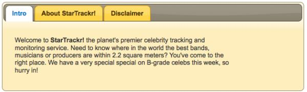</div>
      
            </div><p xmlns:l="http://docbook.sourceforge.net/xmlns/l10n/1.0" xmlns:d="http://docbook.org/ns/docbook" class="title4">Figure 5.7. jQuery UI tabs<a id="ch05-049f"></a>
               </p></div>

      
            With the UI library and CSS styles in place, adding the content is
      easy. Content loaded via Ajax has no requirement for a container to be
      preset; the plugin automatically generates the required DOM
      elements:

      
            <div class="toc"><a xmlns:saxon="http://icl.com/saxon" id="d4e5525"></a><div xmlns:l="http://docbook.sourceforge.net/xmlns/l10n/1.0" xmlns:d="http://docbook.org/ns/docbook" class="sitepoint-formal-example-heading"><em class="calibre8" title="chapter_05/12_jquery_ui_tabs/index.html (excerpt)">
		
                  <span class="sitepoint-formal-example-filename"><span>chapter_05/12_jquery_ui_tabs/index.html</span></span>
        (excerpt)
	</em></div><div class="toc">
        
               

        
               <pre class="programlisting">&lt;div id="info"&gt;
  &lt;ul id="info-nav"&gt;
    &lt;li&gt;&lt;a href="#intro"&gt;Intro&lt;/a&gt;&lt;/li&gt;
    &lt;li&gt;&lt;a href="about.html"&gt;About StarTrackr!&lt;/a&gt;&lt;/li&gt;
    &lt;li&gt;&lt;a href="disclaimer.html"&gt;Disclaimer&lt;/a&gt;&lt;/li&gt;
  &lt;/ul&gt;
  &lt;div&gt;
    &lt;p id="intro"&gt;
      Welcome to &lt;strong&gt;StarTrackr!&lt;/strong&gt; the planet's premier …
    &lt;/p&gt;
  &lt;/div&gt;
&lt;/div&gt;</pre>
      
            </div></div>

      
            As we did before, we first create a tab navigation list. For
      static content, you need to specify an anchor name that corresponds to
      the <code class="email">id</code> of the element containing the
      related content (<code class="email">#intro</code> in our
      example). The next two tabs are our Ajax tabs; they simply point to HTML
      files on the server (or in our case, on the hard disk). In a real web
      application, they’d point to server-side scripts that generate dynamic
      content; for the sake of illustrating how jQuery UI’s Ajaxy tabs work,
      we’ll stick with a few static HTML files. These can contain whatever
      content you’d like to load into your tabs.

      
            The functionality we’ll implement will degrade gracefully in the
      absence of JavaScript; those tabs will simply act
      as links to the referenced files. When JavaScript is enabled, however,
      jQuery will load the content of the target page into the tab content
      pane without refreshing the page. There’s no need to worry about it
      pulling in the whole HTML page; it’s smart enough to only include the
      content between the opening and closing <code class="email">&lt;body&gt;</code> tags.

      
            To turn the above markup into an Ajax-enabled tab interface, all
      you need to write is:

      
            <div class="toc"><a xmlns:saxon="http://icl.com/saxon" id="d4e5535"></a><div xmlns:l="http://docbook.sourceforge.net/xmlns/l10n/1.0" xmlns:d="http://docbook.org/ns/docbook" class="sitepoint-formal-example-heading"><em class="calibre8" title="chapter_05/12_jquery_ui_tabs/script.js (excerpt)">
		
                  <span class="sitepoint-formal-example-filename"><span>chapter_05/12_jquery_ui_tabs/script.js</span></span>
        (excerpt)
	</em></div><div class="toc">
        
               

        
               <pre class="programlisting">$('#info').tabs();</pre>
      
            </div></div>

      
            Try it out in your browser to confirm that it works (it should say
      “Write less, do more”).<a id="d4e5540"></a>
               <a id="d4e5541"></a>
            

      
            <div class="toc" title="Tab Options"><div class="toc"><div class="toc"><div class="toc"><h4 class="title3"><a xmlns:saxon="http://icl.com/saxon" id="d4e5542"></a>Tab Options<a id="ch05-051"></a>
               </h4></div></div></div>
        
               

        
               The tab control comes with reams of customization options that
        you can find on the <a href="http://jqueryui.com/demos/tabs/">jQuery UI tab demo page.</a>
        We’ll explore a few of the juicy ones now:
               

        
               <div class="toc"><a xmlns:saxon="http://icl.com/saxon" id="d4e5549"></a><div xmlns:l="http://docbook.sourceforge.net/xmlns/l10n/1.0" xmlns:d="http://docbook.org/ns/docbook" class="sitepoint-formal-example-heading"><em class="calibre8" title="chapter_05/13_jquery_ui_tab_options/script.js (excerpt)">
		
                     <span class="sitepoint-formal-example-filename"><span>chapter_05/13_jquery_ui_tab_options/script.js</span></span>
          (excerpt)
	</em></div><div class="toc">
          
                  

          
                  <pre class="programlisting">$('#info').tabs({
  event: 'mouseover',
  fx: {
    opacity: 'toggle',
    duration: 'fast'
  },
  spinner: 'Loading...',
  cache: true
});</pre>
        
               </div></div>

        
               As part of the control’s initialization, we’ve passed a
        JavaScript object containing a collection of options:
        <code class="email">event</code>, <code class="email">fx</code>,
        <code class="email">spinner</code>, and <code class="email">cache</code>. <a id="ch05-052"></a>The <code class="email">event</code> option lets you choose the
        event that changes tabs; here we’ve replaced the default
        <code class="email">click</code> with <code class="email">mouseover</code>. To change
        tabs now, the user need only hover over the desired tab.

        
               
                  <a id="ch05-053"></a>Next, we’ve added some animation options to specify a
        fast fade transition when we switch between tabs. The
        <code class="email">fx</code> option works exactly like the <a id="ch05-053a"></a>
                  <code class="email">animate</code> command, letting you
        tweak the transition in whichever way you need.

        
               
                  <a id="ch05-054a"></a>
                  <a id="ch05-054"></a>The last two options are for our Ajax tabs.
        <code class="email">spinner</code> specifies the HTML to display while the
        content is being loaded. With all your pages sitting on your local
        machine, you’re likely to never see this text, but you’ll certainly
        notice the delay (and therefore the <code class="email">spinner</code> text)
        when you put your pages up on a real web server. It’s called
        <code class="email">spinner</code> as it’s often used to display an animated
        GIF image of a spinning icon, which is meant to indicate loading and
        almost always named <span xmlns:l="http://docbook.sourceforge.net/xmlns/l10n/1.0" xmlns:d="http://docbook.org/ns/docbook">spinner.gif</span>.

        
               
                  <a id="ch05-055"></a>The <code class="email">cache</code> option instructs the
        browser to hold on to a copy of the tab content after it’s loaded.
        This way, if a user is clicky on your tabs—switching repeatedly back
        and forth—the browser won’t need to download a fresh copy of the data
        each time.<a id="d4e5590"></a>
               
      
            </div>

      
            <div class="toc" title="Tab Control Methods"><div class="toc"><div class="toc"><div class="toc"><h4 class="title3"><a xmlns:saxon="http://icl.com/saxon" id="d4e5591"></a>Tab Control Methods<a id="ch05-056"></a>
               </h4></div></div></div>
        
               

        
               There are also a host of methods for interacting with the tabs
        programmatically. You can add, remove, and reload tabs, and change the
        open tab automatically. For example:

        
               <div class="toc"><a xmlns:saxon="http://icl.com/saxon" id="d4e5597"></a><div xmlns:l="http://docbook.sourceforge.net/xmlns/l10n/1.0" xmlns:d="http://docbook.org/ns/docbook" class="sitepoint-formal-example-heading"><em class="calibre8" title="chapter_05/14_jquery_ui_tab_control/script.js (excerpt)">
		
                     <span class="sitepoint-formal-example-filename"><span>chapter_05/14_jquery_ui_tab_control/script.js</span></span>
          (excerpt)
	</em></div><div class="toc">
          
                  

          
                  <pre class="programlisting">$('#info').tabs().tabs('rotate', 3500);</pre>
        
               </div></div>

        
               The first <code class="email">tabs</code> call sets up our tab
        pane, and the second one instructs jQuery to cycle through the tabs
        every 3,500 milliseconds (or 3.5 seconds). There’s a lot more you can
        do with your tabs, so have a look at the documentation to see what’s
        possible.

        
               
                  <a id="ch05-057"></a>The last item we’ll have a look at is selecting a tab
        programmatically. You can find the currently selected tab by using the
        selected option:

        
               <pre class="programlisting">$('#tabs').tabs('option', 'selected');</pre>

        
               
                  <a id="ch05-058"></a>Of course, you can also set the current tab. This is
        handy if you want links in your content to simply change the open tab
        rather than linking to a new page. For this example, we’ve inserted a
        link to the About Us page in the content of the first tab. We can
        hijack that link and have it open the About Us tab instead:

        
               <div class="toc"><a xmlns:saxon="http://icl.com/saxon" id="d4e5612"></a><div xmlns:l="http://docbook.sourceforge.net/xmlns/l10n/1.0" xmlns:d="http://docbook.org/ns/docbook" class="sitepoint-formal-example-heading"><em class="calibre8" title="chapter_05/14_jquery_ui_tab_control/script.js (excerpt)">
		
                     <span class="sitepoint-formal-example-filename"><span>chapter_05/14_jquery_ui_tab_control/script.js</span></span>
          (excerpt)
	</em></div><div class="toc">
          
                  

          
                  <pre class="programlisting">$("#info p a[href=about.html]").click(function(event) {
  $('#info').tabs('select', 1);
  event.preventDefault();
});</pre>

          
                  <a id="d4e5616"></a>
        
               </div></div>
      
            </div>
    
         </div>
  
      </div>

  
      <div class="toc" title="Panels and Panes"><div class="toc"><div class="toc"><div class="toc"><h2 class="title1"><a xmlns:saxon="http://icl.com/saxon" id="d4e5617" class="calibre5"></a>Panels and Panes</h2></div></div></div>
    
         

    
         
            <a id="ch05-059"></a>Panels and <a id="ch05-060"></a>panes are nothing more than controls that just hold other
    controls! When used correctly they help organize a page into logical
    areas, minimizing complexity for the user. This lets seasoned users take
    advantage of all your site or application’s features without having your
    newbies drown in a sea of buttons and widgets. Panels are most effective
    when they provide contextual tools and controls that users can work with,
    while documents are open or in focus.

    
         <div class="toc" title="Slide-down Login Form"><div class="toc"><div class="toc"><div class="toc"><h3 class="title2"><a xmlns:saxon="http://icl.com/saxon" id="d4e5625" class="calibre5"></a>Slide-down Login Form<a id="ch05-061" class="calibre5"></a>
               <a id="ch05-061b" class="calibre5"></a>
               <a id="ch05-061a" class="calibre5"></a>
            </h3></div></div></div>
      
            

      
            One increasingly popular method of reducing visible clutter is a
      hidden menu that rests at the very top of the screen. A small button or
      link reveals to the user that more information is available. Clicking
      the button causes a panel to slide into view, and moving away from the
      panel causes it to slide right back.

      
            This is a convenient and practical space saver for sure, and most
      users know that these features are generally displayed to the top right
      of a site’s browser window, so a well-placed icon or link will catch the
      attention of those looking to log in. The login form we’ll create can be
      seen in <a href="ch05.html#fig_slide_login" title="Figure 5.8. Slide-down login form">Figure 5.8</a>.

      
            <div class="toc"><a xmlns:saxon="http://icl.com/saxon" id="fig_slide_login"></a><div class="figure-contents">
        
               

        
               <div class="figure-contents">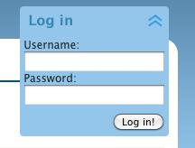</div>
      
            </div><p xmlns:l="http://docbook.sourceforge.net/xmlns/l10n/1.0" xmlns:d="http://docbook.org/ns/docbook" class="title4">Figure 5.8. Slide-down login form<a id="ch05-061af"></a>
                  <a id="ch05-061f"></a>
                  <a id="ch05-061bf"></a>
               </p></div>

      
            This will be an easy addition to our site, as we already know most
      of the jQuery commands involved. We’ll throw some quick CSS styles on
      the control, but, as always, it’s up to you to style it in a way that’s
      consistent with your site. Then comes the by-now-familiar refrain: hide
      the form on page load, then capture the click event to toggle it into
      and out of sight:

      
            <div class="toc"><a xmlns:saxon="http://icl.com/saxon" id="d4e5650"></a><div xmlns:l="http://docbook.sourceforge.net/xmlns/l10n/1.0" xmlns:d="http://docbook.org/ns/docbook" class="sitepoint-formal-example-heading"><em class="calibre8" title="chapter_05/15_login_panel/script.js (excerpt)">
		
                  <span class="sitepoint-formal-example-filename"><span>chapter_05/15_login_panel/script.js</span></span>
        (excerpt)
	</em></div><div class="toc">
        
               

        
               <pre class="programlisting">$('#login form').hide();
$('#login a').toggle(function() {
  $(this)
    .addClass('active')
    .next('form')
    .animate({'height':'show'}, {
      duration: 'slow',
      easing: 'easeOutBounce'
    });
}, function() {
  $(this)
    .removeClass('active')
    .next('form')
    .slideUp();
});</pre>
      
            </div></div>

      
            The only difference between this code and the expandable menu from
      the beginning of the chapter is that here we’re using a CSS <a id="ch05-062"></a>class to control the position of our background image,
      rather than the jQuery <code class="email">css</code> action. Because
      these classes are only really used when JavaScript is available (as
      otherwise we’ll be presenting a control that’s always open), neither
      solution is necessarily better, and the one you choose will depend more
      on your preference.

      
            This was a bit too easy, so we’ll finesse it a touch. If our login
      form were to submit via Ajax (without triggering a page refresh), we’d
      want the panel to disappear after the form was submitted. Actually, even
      if we’re loading a new page, having the menu slide up after clicking is
      a nice flourish:

      
            <div class="toc"><a xmlns:saxon="http://icl.com/saxon" id="d4e5661"></a><div xmlns:l="http://docbook.sourceforge.net/xmlns/l10n/1.0" xmlns:d="http://docbook.org/ns/docbook" class="sitepoint-formal-example-heading"><em class="calibre8" title="chapter_05/15_login_panel/script.js (excerpt)">
		
                  <span class="sitepoint-formal-example-filename"><span>chapter_05/15_login_panel/script.js</span></span>
        (excerpt)
	</em></div><div class="toc">
        
               

        
               <pre class="programlisting">$('#login form :submit').click(function() {
  $(this)
    <a id="ch05-063"></a>
                  <a id="ch05-063a"></a>.parent()
    .prev('a')
    .click();
});</pre>
      
            </div></div>

      
            We start by capturing the <code class="email">click</code> event on the
      form’s submit button, and then move back up the DOM tree looking for the
      containing element. We could just perform our hide here, but given that
      we’ve already written code to handle the hiding in our original handler,
      we can just step back through the DOM using the
      <code class="email">prev</code> method, and click on our hide/show
      link.<a id="d4e5673"></a>
               <a id="d4e5674"></a>
               <a id="d4e5675"></a>
            
    
         </div>

    
         <div class="toc" title="Sliding Overlay"><div class="toc"><div class="toc"><div class="toc"><h3 class="title2"><a xmlns:saxon="http://icl.com/saxon" id="d4e5676" class="calibre5"></a>Sliding Overlay<a id="ch05-064" class="calibre5"></a>
               <a id="ch05-064b" class="calibre5"></a>
               <a id="ch05-064a" class="calibre5"></a>
            </h3></div></div></div>
      
            

      
            Translucent sliding overlays have been popping up all over the
      place of late: from message dialogs to shopping cart summaries,
      navigation controls, and more. The reason for their popularity is
      simple: they look incredibly cool—like the highly questionable
      interfaces from action-movie computer scenes—and they’re actually
      useful!

      
            The most important factors to consider in the creation of the
      sliding overlay are where you want the contents to slide from, and how
      the overlay will be triggered. The choices will affect how the user
      interacts with the control and how they expect it to act. This type of
      control is fairly new to the Web—so there are no conventions you need to
      adhere to—but you can look for analogies with the desktop for how they
      should perform. Perhaps you’ll create a version of it that actually sets
      some rules!

      
            For example, you might like to include a content panel that slides
      out when the user moves the mouse close to the edge of the page, such as
      the auto-hide taskbar or dock on many operating systems. Or perhaps
      moving over the bottom edge of the content area could cause a
      <span xmlns:l="http://docbook.sourceforge.net/xmlns/l10n/1.0" xmlns:d="http://docbook.org/ns/docbook">Next</span>/<span xmlns:l="http://docbook.sourceforge.net/xmlns/l10n/1.0" xmlns:d="http://docbook.org/ns/docbook">Previous</span> control to
      slide into view.

      
            Our overlay will be triggered by moving the mouse over a shopping
      cart link. Mousing over the link will cause a menu to slide down from
      under the header and over the page, informing the user of the number of
      items currently in the shopping cart and providing links to check out or
      view the cart. As illustrated in <a href="ch05.html#fig_sliding_overlay" title="Figure 5.9. A sliding shopping cart overlay">Figure 5.9</a>,
      the shopping cart icon that acts as the trigger is located in the
      top-right corner of the content area.

      
            <div class="toc"><a xmlns:saxon="http://icl.com/saxon" id="fig_sliding_overlay"></a><div class="figure-contents">
        
               

        
               <div class="figure-contents">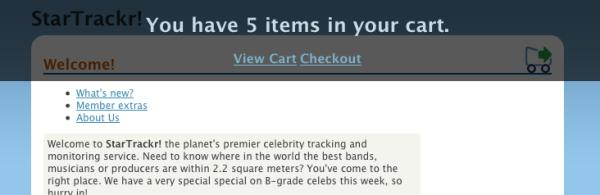</div>
      
            </div><p xmlns:l="http://docbook.sourceforge.net/xmlns/l10n/1.0" xmlns:d="http://docbook.org/ns/docbook" class="title4">Figure 5.9. A sliding shopping cart overlay<a id="ch05-064f"></a>
                  <a id="ch05-064bf"></a>
                  <a id="ch05-064af"></a>
               </p></div>

      
            As always, styling provides the real basis of our effect. This
      determines what our trigger will look like, and where our sliding
      commences. Our trigger will be absolutely positioned in the top-right
      corner of the page contents:

      
            <div class="toc"><a xmlns:saxon="http://icl.com/saxon" id="d4e5705"></a><div xmlns:l="http://docbook.sourceforge.net/xmlns/l10n/1.0" xmlns:d="http://docbook.org/ns/docbook" class="sitepoint-formal-example-heading"><em class="calibre8" title="chapter_05/16_sliding_overlay/panel.css (excerpt)">
		
                  <span class="sitepoint-formal-example-filename"><span>chapter_05/16_sliding_overlay/panel.css</span></span>
        (excerpt)
	</em></div><div class="toc">
        
               

        
               <pre class="programlisting">.cart a {
  position: absolute;
  width: 32px;
  height: 32px;
  right: 15px;
  top: -10px;
  background: transparent url(shoppingcart.png) no-repeat 0 0;
  text-indent: -9999px;
}

.cart a:hover, .cart-hover {
  background-position: 0 -32px;
}

#overlay {
  position: absolute;
  width: 100%;
  height: 100px;
  top: 0;
  left: 0;
  color: #fff;
  background-color: #000;
  display: none;
  text-align: center;
}

#overlay a {
  font-size: 130%;
  font-weight: bold;
}</pre>
      
            </div></div>

      
            Because the overlay will only be triggered by jQuery, it stands to
      reason that it should be added to the page markup with jQuery as well.
      The overlay is set up to be 100% width of the page, and have a height of
      100 pixels. We want the overlay to slide down from the top, so we set
      the top position to 0. Of course, we also hide it so that it’s absent
      from the page when it loads.

      
            The first step is to add the overlay to the markup. We will give
      it a hover handler, because when it slides into the page we want it to
      remain visible for as long as the user keeps the mouse over it. We give
      it a <code class="email">class</code> of <code class="email">active</code> as long as it’s open, and use that
      <code class="email">class</code> to determine when it needs to
      be closed. This is another great candidate for <a id="ch05-065c"></a>
               <a id="ch05-065b"></a>
               <a id="ch05-065a"></a>
               <a id="ch05-065"></a>
               <code class="email">data</code> that we covered in <a href="ch04.html#section_data" title="Smarter Scrolling with the data Method">the section called “Smarter Scrolling with the 
                  
                  <code class="email">data</code> Method” in Chapter 4</a>, although that might change if we were also
      using the class to add styling. When the user mouses away from it, we
      remove the <code class="email">class</code>, and set a timer,
      which will look for an overlay without the <code class="email">active</code> 
               <code class="email">class</code> and close it after a little less than
      a second. This way, if the user re-opens the overlay while the timer is
      running, the timer method will do nothing:

      
            <div class="toc"><a xmlns:saxon="http://icl.com/saxon" id="d4e5733"></a><div xmlns:l="http://docbook.sourceforge.net/xmlns/l10n/1.0" xmlns:d="http://docbook.org/ns/docbook" class="sitepoint-formal-example-heading"><em class="calibre8" title="chapter_05/16_sliding_overlay/script.js (excerpt)">
		
                  <span class="sitepoint-formal-example-filename"><span>chapter_05/16_sliding_overlay/script.js</span></span>
        (excerpt)
	</em></div><div class="toc">
        
               

        
               <pre class="programlisting">$('&lt;div&gt;&lt;/div&gt;')
  .attr('id', 'overlay')
  .css('opacity', 0.65)
  .hover(function() {
    $(this).addClass('active');
  }, function() {
    $(this).removeClass('active');
    setTimeout(function() {
      $('#overlay:not(.active)').slideUp(function() {
        $('a.cart-hover').removeClass('cart-hover');
      });
    }, 800);
  }).appendTo('body');</pre>
      
            </div></div>

      
            
               <a id="ch05-066a"></a>We’re using the <a id="ch05-066"></a>
               <code class="email">opacity</code> CSS property to make our
      overlay semitransparent. <code class="email">opacity</code> values range from
      0 to 1, with 1 being completely opaque and 0 being invisible.

      
            <div class="tip" title="Warning: Accessibility"><h3 class="title2">Warning: Accessibility</h3>
        
               

        
               
                  <a id="ch05-067"></a>
                  <a id="ch05-068"></a>
                  <a id="ch05-068a"></a>
                  <a id="ch05-068b"></a>Be careful when creating semitransparent controls that
        there’s sufficient color contrast between your content and the
        background. Maybe it’s easy for you to read, but always consider that
        some of your visitors may have less than perfect vision, a poor
        monitor, or be viewing your site on a mobile screen in bad lighting
        conditions. When in doubt, err on the side of caution, with higher
        contrasts than you think are necessary.<a id="d4e5759"></a>
               
      
            </div>

      
            Now let’s add the event listener to our trigger link:

      
            <div class="toc"><a xmlns:saxon="http://icl.com/saxon" id="d4e5761"></a><div xmlns:l="http://docbook.sourceforge.net/xmlns/l10n/1.0" xmlns:d="http://docbook.org/ns/docbook" class="sitepoint-formal-example-heading"><em class="calibre8" title="chapter_05/16_sliding_overlay/script.js (excerpt)">
		
                  <span class="sitepoint-formal-example-filename"><span>chapter_05/16_sliding_overlay/script.js</span></span>
        (excerpt)
	</em></div><div class="toc">
        
               

        
               <pre class="programlisting">$('.cart a').mouseover(function() {
  $(this).addClass('cart-hover');
  $('#overlay:not(:animated)')
    .addClass('active')
    .html('&lt;h1&gt;You have 5 items in your cart.&lt;/h1&gt;
↵&lt;a href="#"&gt;View Cart&lt;/a&gt;&amp;nbsp;&lt;a href="#"&gt;Checkout&lt;/a&gt;')
    .slideDown();      
});</pre>
      
            </div></div>

      
            There’s a new filter in our selector here: <a id="ch05-069"></a>
               <a id="ch05-069a"></a>
               <code class="email">:animated</code>, which allows us to select
      elements that are currently being animated (or, as in this case,
      combined with the <a id="ch05-070"></a>
               <a id="ch05-070a"></a>
               <code class="email">:not</code> filter to select elements which
      are not mid-animation). We add some static markup to our overlay, but in
      a real application you’d want to obtain the number of cart items in
      order to display it here.

      
            We are also adding a class to the trigger link to style it, as its
      hover style would otherwise switch off when the overlay came between it
      and the cursor.

      
            Of course, this is only one example of this sort of functionality;
      it’s likely you can think of many others. Transparency is remarkably
      easy to manipulate in jQuery, and really makes interface components feel
      a lot slicker.<a id="d4e5784"></a>
               <a id="d4e5785"></a>
               <a id="d4e5786"></a>
            
    
         </div>
  
      </div>

  
      <div class="toc" title="Tooltips"><div class="toc"><div class="toc"><div class="toc"><h2 class="title1"><a xmlns:saxon="http://icl.com/saxon" id="d4e5787" class="calibre5"></a>Tooltips</h2></div></div></div>
    
         

    
         
            <a id="ch05-071"></a>A <span><strong class="calibre9">tooltip</strong></span> is an interface component
    that appears when a user hovers over a control. They’re already present in
    most browsers; when you provide a <code class="email">title</code> attribute for a link or an <a id="ch05-0719"></a>
            <a id="ch05-0719a"></a>
            <code class="email">alt</code> attribute for an
    image, the browser will usually display it as a tooltip when the user
    hovers over that element. Tooltips typically appear when the user hovers
    over a <a id="ch05-073"></a>
            <a id="ch05-073a"></a>hyperlink to provide additional information about where the
    link will take them.

    
         JavaScript tooltips have a bit of a bad rap. They tend to be
    implemented in an obnoxious manner, acting more like an ad popup than a
    useful information tool. However, there are situations in which a tooltip
    can provide just the right touch to your application, helping to inform
    your users in a contextual fashion without cluttering the rest of your
    interface.

    
         First, we’ll have a go at replacing the browser’s default tooltips
    with ones we can style and animate. Then we’ll look at extending this to
    create a much more versatile tooltip, which can contain HTML and be
    attached to any element on the page.<a id="d4e5812"></a>
         

    
         <div class="toc" title="Simple Styled Tooltips"><div class="toc"><div class="toc"><div class="toc"><h3 class="title2"><a xmlns:saxon="http://icl.com/saxon" id="d4e5813" class="calibre5"></a>Simple Styled Tooltips<a id="ch05-072" class="calibre5"></a>
            </h3></div></div></div>
      
            

      
            Of course, there’ll be other places where you’ll want to use
      tooltips, but on hyperlinks is a good place to start. We’ll look at
      replacing the browser’s default tooltips with our own custom-styled,
      animated ones, as illustrated in <a href="ch05.html#fig_tooltip" title="Figure 5.10. Our custom tooltips">Figure 5.10</a>.

      
            <div class="toc"><a xmlns:saxon="http://icl.com/saxon" id="fig_tooltip"></a><div class="figure-contents">
        
               

        
               <div class="figure-contents">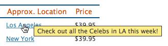</div>
      
            </div><p xmlns:l="http://docbook.sourceforge.net/xmlns/l10n/1.0" xmlns:d="http://docbook.org/ns/docbook" class="title4">Figure 5.10. Our custom tooltips<a id="ch05-072f"></a>
               </p></div>

      
            For our simple control, we’ll use the <code class="email">title</code> attribute of the links. This is great
      for our ever-vigilant efforts to maintain acceptable functionality for
      users without JavaScript support; depending on their browser, they’ll
      most likely see the text as a basic browser tooltip:

      
            <div class="toc"><a xmlns:saxon="http://icl.com/saxon" id="d4e5830"></a><div xmlns:l="http://docbook.sourceforge.net/xmlns/l10n/1.0" xmlns:d="http://docbook.org/ns/docbook" class="sitepoint-formal-example-heading"><em class="calibre8" title="chapter_05/17_simple_tooltips/index.html (excerpt)">
		
                  <span class="sitepoint-formal-example-filename"><span>chapter_05/17_simple_tooltips/index.html</span></span>
        (excerpt)
	</em></div><div class="toc">
        
               

        
               <pre class="programlisting">&lt;a href="#" class="location" title="Check out all the … "&gt;
  New York&lt;/a&gt;</pre>
      
            </div></div>

      
            Using the <code class="email">title</code> attribute can
      be a bit limiting: you’re unable (technically or reliably) to have HTML
      nested inside your tooltip, and you’ll need to be careful with special
      characters that might break the tag. There are a few alternate
      techniques for storing the tooltip’s text. We’ll have a look at another
      method when we make our advanced tooltip, but it’s important to note
      that any method will have upsides and downsides, so you’ll need to
      decide what’s best in each particular circumstance.<a id="d4e5836"></a>
               <a id="d4e5837"></a>
            

      
            Being able to style the tooltip is the main reason for
      implementing a custom control in the first place—so go nuts with your
      styles! However, for our example, we’ll define some very basic styles
      for our tooltips:

      
            <div class="toc"><a xmlns:saxon="http://icl.com/saxon" id="d4e5839"></a><div xmlns:l="http://docbook.sourceforge.net/xmlns/l10n/1.0" xmlns:d="http://docbook.org/ns/docbook" class="sitepoint-formal-example-heading"><em class="calibre8" title="chapter_05/17_simple_tooltips/tooltips.css (excerpt)">
		
                  <span class="sitepoint-formal-example-filename"><span>chapter_05/17_simple_tooltips/tooltips.css</span></span>
        (excerpt)
	</em></div><div class="toc">
        
               

        
               <pre class="programlisting">.tooltip {
  display: none;
  position: absolute;
  border: 1px solid #333;
  background-color: #ffed8a;
  padding: 2px 6px;
}</pre>
      
            </div></div>

      
            The tooltip control is positioned absolutely, which will allow us
      to move it around as required. Next, we’ll set up some stubs for our
      code to sit in, which lets you see the general structure: a simple
      <code class="email">hover</code> function, followed by a chained
      <code class="email">mousemove</code> function. We want the tooltip to turn
      on and off with the <code class="email">hover</code> event, and update its
      position whenever the mouse is moved:

      
            <div class="toc"><a xmlns:saxon="http://icl.com/saxon" id="d4e5847"></a><div xmlns:l="http://docbook.sourceforge.net/xmlns/l10n/1.0" xmlns:d="http://docbook.org/ns/docbook" class="sitepoint-formal-example-heading"><em class="calibre8" title="chapter_05/17_simple_tooltips/script.js (excerpt)">
		
                  <span class="sitepoint-formal-example-filename"><span>chapter_05/17_simple_tooltips/script.js</span></span>
        (excerpt)
	</em></div><div class="toc">
        
               

        
               <pre class="programlisting">$('.location').hover(function(event) {
  // Hover over code
}, function() {
  // Hover out code
}).mousemove(function(event) {
  // Mouse move code
});</pre>
      
            </div></div>

      
            Starting with the overall structure and then filling in the
      details is a great way to plan out your code, ensuring you know what’s
      going on before diving in. It helps when writing code to always have a
      contextual understanding of where that piece sits in the larger
      picture.

      
            Let’s start filling in those stubs. The hover over code is the
      most interesting, so we’ll start with that. Notice that we’re again
      naming that parameter <code class="email">event</code> into the hover code. This
      is important, as we’ll need to access the X and Y coordinates of the
      event in order to position the tooltip:

      
            <div class="toc"><a xmlns:saxon="http://icl.com/saxon" id="d4e5854"></a><div xmlns:l="http://docbook.sourceforge.net/xmlns/l10n/1.0" xmlns:d="http://docbook.org/ns/docbook" class="sitepoint-formal-example-heading"><em class="calibre8" title="chapter_05/17_simple_tooltips/script.js (excerpt)">
		
                  <span class="sitepoint-formal-example-filename"><span>chapter_05/17_simple_tooltips/script.js</span></span>
        (excerpt)
	</em></div><div class="toc">
        
               

        
               <pre class="programlisting">// Hover over code
var titleText = $(this).attr('title');
$(this)
  .data('tipText', titleText)
  .<a id="ch05-0759"></a>removeAttr('title');
      
$('&lt;p class="tooltip"&gt;&lt;/p&gt;')
  .text(titleText)
  .appendTo('body')
  .css('top', (event.pageY - 10) + 'px')
  .css('left', (event.pageX + 20) + 'px')
  .fadeIn('slow');</pre>
      
            </div></div>

      
            
               <a id="ch05-075"></a>
               <a id="ch05-075a"></a>First we need to grab the <code class="email">title</code> from the link, which will be the text
      we want our tooltip to display.

      
            The next part of the code is a touch peculiar: it saves the
      tooltip <a id="ch05-076a"></a>text using the <a id="ch05-076"></a>
               <a id="ch05-076b"></a>
               <code class="email">data</code> method that we saw in <a href="ch04.html#section_data" title="Smarter Scrolling with the data Method">the section called “Smarter Scrolling with the 
                  
                  <code class="email">data</code> Method” in Chapter 4</a>. We need to do this because we’ll be removing
      the <code class="email">title</code> from the link, in order
      to prevent the browser from displaying its default tooltip that will
      conflict with our custom one. By storing the text using the
      <code class="email">data</code> method, we can recover and replace the
      link title later.

      
            We now have everything we need to create our tooltip control.
      We’ll create a new paragraph element with a <code class="email">class</code> of <code class="email">tooltip</code>, in order to hook into the styles we
      created earlier. Then we use the <a id="ch05-077"></a>
               <code class="email">text</code> method to set the tooltip’s
      contents. We <span><em class="calibre8">could</em></span> use <a id="ch05-078"></a>
               <code class="email">html</code> instead of
      <code class="email">text</code> here, but according to W3C standards, the
      <code class="email">title</code> attribute should not contain
      HTML. The advanced tooltip we’ll be looking at shortly will allow us to
      include HTML, but for the moment we’ll stick with plain text.<a id="d4e5899"></a>
               <a id="d4e5900"></a>
            

      
            <div class="tip" title="Note: A Question of Style"><h3 class="title2">Note: A Question of Style</h3>
        
               

        
               We’re setting a tooltip class, but could have just as easily
        specified the paragraph’s <code class="email">id</code> with
        jQuery like this: <code class="email">$('&lt;p&gt;&lt;/p&gt;').attr('id',
        'tooltip')</code>. Likewise, we could have used JavaScript string
        concatenation to populate the element’s content:
        <code class="email">$('&lt;p&gt;' + titleText + '&lt;/p&gt;')</code>. The
        methods result in the same DOM objects, and they’re all fairly clear
        and readable, so it’s up to your personal coding style whether you
        prefer doing more with jQuery chaining or with plain
        JavaScript.
      
            </div>

      
            After we add our new node to the page (using <a id="ch05-079"></a>
               <code class="email">appendTo</code>) we set a few inline
      styles, using the <a id="ch05-080"></a>event object (<code class="email">event</code>) to obtain the
      position where we need to place the tooltip. <a id="ch05-082"></a>
               <code class="email">pageX</code> and <a id="ch05-083"></a>
               <code class="email">pageY</code> are properties of the event
      object that allow you to find out where the event took place on the
      page. This can be tremendously useful in a lot of situations; you’ll
      often find yourself needing to position an element on the screen based
      on an event that just fired:

      
            <div class="toc"><a xmlns:saxon="http://icl.com/saxon" id="d4e5924"></a><div xmlns:l="http://docbook.sourceforge.net/xmlns/l10n/1.0" xmlns:d="http://docbook.org/ns/docbook" class="sitepoint-formal-example-heading"><em class="calibre8" title="chapter_05/17_simple_tooltips/script.js (excerpt)">
		
                  <span class="sitepoint-formal-example-filename"><span>chapter_05/17_simple_tooltips/script.js</span></span>
        (excerpt)
	</em></div><div class="toc">
        
               

        
               <pre class="programlisting">// Hover out code
$(this).attr('title', $(this).data('tipText'));
$('.tooltip').remove();</pre>
      
            </div></div>

      
            The hover out code couldn’t be simpler: we just reverse what we
      did in the hover over code, restoring the <code class="email">title</code> attribute and removing the
      tooltip:

      
            <div class="toc"><a xmlns:saxon="http://icl.com/saxon" id="d4e5930"></a><div xmlns:l="http://docbook.sourceforge.net/xmlns/l10n/1.0" xmlns:d="http://docbook.org/ns/docbook" class="sitepoint-formal-example-heading"><em class="calibre8" title="chapter_05/17_simple_tooltips/script.js (excerpt)">
		
                  <span class="sitepoint-formal-example-filename"><span>chapter_05/17_simple_tooltips/script.js</span></span>
        (excerpt)
	</em></div><div class="toc">
        
               

        
               <pre class="programlisting">// Mouse move code
$('.tooltip')
  .css('top', (event.pageY - 10) + 'px')
  .css('left', (event.pageX + 20) + 'px');</pre>
      
            </div></div>

      
            Finally, we need to respond to mouse movement by updating the
      tooltip’s location. This way the tooltip will follow the mouse around,
      just like the browser’s built-in tooltips do. And presto! We’ve replaced
      the default tooltips with our own, and we’re fully in control of their
      appearance and animation.<a id="d4e5935"></a>
            
    
         </div>

    
         <div class="toc" title="Advanced Tooltips and Dialogs"><div class="toc"><div class="toc"><div class="toc"><h3 class="title2"><a xmlns:saxon="http://icl.com/saxon" id="section_advanced_tooltips" class="calibre5"></a>Advanced Tooltips and Dialogs<a id="ch05-084x" class="calibre5"></a>
            </h3></div></div></div>
      
            

      
            
               <a id="ch05-084"></a>It’s good to know how to build a simple tooltip, but we
      also know that we can do better. For more sophisticated tooltips, which
      can include other markup (such as images or links) inside the content,
      we’ll need to move our thinking from tooltips to dialogs, and move the
      tips from <code class="email">title</code> attribute into our
      actual markup. We’ll hide them with CSS, then reveal and position them
      using jQuery as required. The final effect is illustrated in <a href="ch05.html#fig_advanced_tooltip" title="Figure 5.11. Our advanced tooltip">Figure 5.11</a>.

      
            <div class="toc"><a xmlns:saxon="http://icl.com/saxon" id="fig_advanced_tooltip"></a><div class="figure-contents">
        
               

        
               <div class="figure-contents">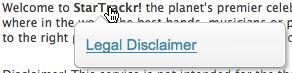</div>
      
            </div><p xmlns:l="http://docbook.sourceforge.net/xmlns/l10n/1.0" xmlns:d="http://docbook.org/ns/docbook" class="title4">Figure 5.11. Our advanced tooltip<a id="ch05-084f"></a>
               </p></div>

      
            Our dialog markup will consist of two nested <code class="email">span</code> elements, which will sit inside the
      element we want to use to trigger the dialog. This may occasionally
      require some creativity with your markup, but it helps us to position
      the dialog, as we can give it an absolute position offset from the
      parent element. It also aids with triggering events, since, if the user
      moves the mouse over the dialog, it will still be over the triggering
      element, so no additional <code class="email">hover</code> event handling is
      required.

      
            Here’s an example of the dialog box markup:

      
            <div class="toc"><a xmlns:saxon="http://icl.com/saxon" id="d4e5960"></a><div xmlns:l="http://docbook.sourceforge.net/xmlns/l10n/1.0" xmlns:d="http://docbook.org/ns/docbook" class="sitepoint-formal-example-heading"><em class="calibre8" title="chapter_05/18_advanced_tooltips/index.html (excerpt)">
		
                  <span class="sitepoint-formal-example-filename"><span>chapter_05/18_advanced_tooltips/index.html</span></span>
        (excerpt)
	</em></div><div class="toc">
        
               

        
               <pre class="programlisting">&lt;p&gt;
  Welcome to 
    &lt;strong&gt;StarTrackr!
      &lt;span class='dialog'&gt;
        &lt;span&gt;&lt;a href='#'&gt;Legal Disclaimer&lt;/a&gt;&lt;/span&gt;
      &lt;/span&gt;
    &lt;/strong&gt; the planet's premier celebrity tracking … 
&lt;/p&gt;</pre>
      
            </div></div>

      
            When we’re done, the dialog will look great and will contain a
      link to the disclaimer page. But let’s not hang around; we’ve considered
      a few dialog methods, so let’s dive straight in.<a id="d4e5965"></a>
            

      
            
               <a id="ch05-085a"></a>
               <a id="ch05-085"></a>As we’ll see when we start writing the code, our dialog
      will be quite clever, positioning itself on whichever side of the target
      element has enough room for it to be displayed. In order to make a cool
      text-bubble graphic work in this context, we’ll need four different
      bubbles: above-left, above-right, below-left, and below-right. We’ll be
      using a single sprite for each of the dialog’s four possible states, as
      illustrated in <a href="ch05.html#fig_tooltip_sprite" title="Figure 5.12. Our dialog sprite">Figure 5.12</a>.

      
            <div class="toc"><a xmlns:saxon="http://icl.com/saxon" id="fig_tooltip_sprite"></a><div class="figure-contents">
        
               

        
               <div class="figure-contents">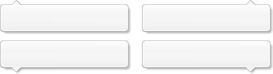</div>
      
            </div><p xmlns:l="http://docbook.sourceforge.net/xmlns/l10n/1.0" xmlns:d="http://docbook.org/ns/docbook" class="title4">Figure 5.12. Our dialog sprite<a id="ch05-085f"></a>
                  <a id="ch05-085af"></a>
               </p></div>

      
            These dialog boxes require some fairly complex jQuery code. We’ll
      go over it bit by bit, but don’t worry if you have trouble understanding
      all of it right now. There’s a bit of a leap from writing quick two- or
      three-line scripts that replace and highlight content on the page, to
      writing a more complex UI widget. In <a href="ch06.html#section_construction" title="Construction and Best Practices">the section called “Construction and Best Practices” in Chapter 6</a>, we’ll have a look at some of the ways
      we can try to minimize complexity and keep our code readable, even as it
      becomes longer and more involved.

      
            For the moment, try to focus on seeing the bits of jQuery you
      already know employed in a larger context; this should give you an idea
      of how you can go about combining small pieces of logic into a larger
      picture that performs really impressively.

      
            
               <a id="ch05-086"></a>Our first task is to create a <code class="email">DIALOG</code>
      object that will contain all our code. We set a <code class="email">delay</code>
      property at the top of the object (this will make it easier to modify
      the configuration of the widget without hunting through the code to find
      where this variable was set):

      
            <div class="toc"><a xmlns:saxon="http://icl.com/saxon" id="d4e5992"></a><div xmlns:l="http://docbook.sourceforge.net/xmlns/l10n/1.0" xmlns:d="http://docbook.org/ns/docbook" class="sitepoint-formal-example-heading"><em class="calibre8" title="chapter_05/18_advanced_tooltips/script.js (excerpt)">
		
                  <span class="sitepoint-formal-example-filename"><span>chapter_05/18_advanced_tooltips/script.js</span></span>
        (excerpt)
	</em></div><div class="toc">
        
               

        
               <pre class="programlisting">var DIALOG = {
    current: null,
    delay: 600,
    timer: null,
    setDialogs: function () {
      //Determine dialog positions    
    …
}<a id="d4e5996"></a>
               </pre>
      
            </div></div>

      
            
               <a id="ch05-087a"></a>
               <a id="ch05-087"></a>Then we add a function called
      <code class="email">setDialogs</code>, which we’ll run when the page loads
      or is resized. This function will find all the dialogs on the page and
      determine their position by looking at their parent elements. It will
      also set up a <code class="email">hover</code> event on each of them so that
      they’re displayed on mouse over. Here’s the <code class="email">hover</code>
      event:

      
            <div class="toc"><a xmlns:saxon="http://icl.com/saxon" id="d4e6006"></a><div xmlns:l="http://docbook.sourceforge.net/xmlns/l10n/1.0" xmlns:d="http://docbook.org/ns/docbook" class="sitepoint-formal-example-heading"><em class="calibre8" title="chapter_05/18_advanced_tooltips/script.js (excerpt)">
		
                  <span class="sitepoint-formal-example-filename"><span>chapter_05/18_advanced_tooltips/script.js</span></span>
        (excerpt)
	</em></div><div class="toc">
        
               

        
               <pre class="programlisting">  $('.dialog').parent().hover(function() {
    // store the dialog being hovered
    DIALOG.current = $(this);   
    DIALOG.timer = setTimeout(function() { <a xmlns:saxon="http://icl.com/saxon" id="settips_co_1"></a><span xmlns:l="http://docbook.sourceforge.net/xmlns/l10n/1.0" xmlns:d="http://docbook.org/ns/docbook" class="sitepoint-callout-bug">(1)</span>
      // find the dialog,
      $(this).find(".dialog").fadeIn('fast');
      }, DIALOG.delay);
  }, function() {
    // on mouseout, clear timer and hide dialog
    clearTimeout(DIALOG.timer); <a xmlns:saxon="http://icl.com/saxon" id="settips_co_2"></a><span xmlns:l="http://docbook.sourceforge.net/xmlns/l10n/1.0" xmlns:d="http://docbook.org/ns/docbook" class="sitepoint-callout-bug">(2)</span>
    $(this).find(".dialog").fadeOut('fast');
  }).attr("title", ""); // clear the title to stop browser tooltips</pre>
      
            </div></div>

      
            That’s a fairly dense block of code, so let’s see if we can make
      some sense of what’s happening:

      
            <div class="toc"><table border="0" summary="Callout list" class="calibre13"><tr class="calibre14"><td valign="top" class="calibre15"><p class="calibre16"><a href="#settips_co_1"><span xmlns:l="http://docbook.sourceforge.net/xmlns/l10n/1.0" xmlns:d="http://docbook.org/ns/docbook" class="sitepoint-callout-bug">(1)</span></a> </p></td><td valign="top" class="calibre15">
          
                  We’re using the familiar <a id="ch05-089"></a>
                     <code class="email">setTimeout</code> function, except
          that this time we’re saving the timer to a variable. This is so we
          can turn it off by name if we need to. We’re accessing the
          <a id="ch05-090"></a>
                     <code class="email">delay</code> property we set before as the
          second parameter for <code class="email">setTimeout</code>. As we’ve
          seen, this is how long the browser will wait before displaying the
          dialog.
        
               </td></tr><tr class="calibre14"><td valign="top" class="calibre15"><p class="calibre16"><a href="#settips_co_2"><span xmlns:l="http://docbook.sourceforge.net/xmlns/l10n/1.0" xmlns:d="http://docbook.org/ns/docbook" class="sitepoint-callout-bug">(2)</span></a> </p></td><td valign="top" class="calibre15">
          
                  When the user mouses off the target, we want to stop the timer
          so that the dialog will stay hidden after the delay expires. We do
          this with the JavaScript <a id="ch05-091"></a>
                     <code class="email">clearTimeout</code> method, passing
          in the reference to our timer.
                     <a id="d4e6031"></a>
                     <a id="d4e6032"></a>
                  
        
               </td></tr></table></div>

      
            
               <div class="tip" title="Note: for versus each"><h3 class="title2">Note: 
                     <code class="literal">for</code> versus <code class="literal">each</code>
                  </h3>
          
                  

          
                  
                     <a id="ch05-092"></a>
                     <a id="ch05-092a"></a>
                     <a id="ch05-092b"></a>Before we try that function out, though, there’s
          enough noise in JavaScript circles to take a quick look at an
          ongoing debate around our <code class="email">each</code> loop:

          
                  <div class="toc"><a xmlns:saxon="http://icl.com/saxon" id="d4e6049"></a><div xmlns:l="http://docbook.sourceforge.net/xmlns/l10n/1.0" xmlns:d="http://docbook.org/ns/docbook" class="sitepoint-formal-example-heading"><em class="calibre8" title="chapter_05/18_advanced_tooltips/script.js (excerpt)">
		
                        <span class="sitepoint-formal-example-filename"><span>chapter_05/18_advanced_tooltips/script.js</span></span>
            (excerpt)
	</em></div><div class="toc">
            
                     

            
                     <pre class="programlisting">$(".dialog").each(function(){// grab the containing element</pre>
          
                  </div></div>

          
                  Anytime we replace a pure JavaScript method with a jQuery one,
          an overhead is imposed. When we use <code class="email">each</code> to
          replace a <code class="email">for</code> loop, we have to call jQuery,
          and that takes time. Tiny fractions of a millisecond, sure, but
          still time. And those fractions add up.

          
                  So we should always use a <code class="email">for</code> loop,
          right? Not at all! If you know that there will be a time hit and are
          aware what its impact will be on your code, go for your life. And
          more importantly, if you’re <a id="ch05-093"></a>storing a value inside the loop for reference later,
          an <code class="email">each</code> loop provides that for free, whereas a
          <code class="email">for</code> loop often needs extra legwork. So it’s not
          always cut and dried, but as in this instance we store a value,
          we’re going to stick with our <code class="email">each</code>
          loop.<a id="d4e6064"></a>
                     <a id="d4e6065"></a>
                     <a id="d4e6066"></a>
                  
        
               </div>
            

      
            
               <a id="ch05-094"></a>
               <a id="ch05-094a"></a>Now that our hover handler is set up, we need to determine
      the position of each dialog. We’ll use <code class="email">each</code> to loop
      over them, but first we’ll grab the height and width of the screen. If
      we were to do this <span><em class="calibre8">inside</em></span> the <a id="ch05-0949"></a>loop, jQuery would need to calculate those values once for
      each dialog box, even though they’re always the same. By storing the
      values outside the loop, we avoid this wasteful calculation and improve
      the performance of our script:<a id="d4e6078"></a>
            

      
            <div class="toc"><a xmlns:saxon="http://icl.com/saxon" id="d4e6079"></a><div xmlns:l="http://docbook.sourceforge.net/xmlns/l10n/1.0" xmlns:d="http://docbook.org/ns/docbook" class="sitepoint-formal-example-heading"><em class="calibre8" title="chapter_05/18_advanced_tooltips/script.js (excerpt)">
		
                  <span class="sitepoint-formal-example-filename"><span>chapter_05/18_advanced_tooltips/script.js</span></span>
        (excerpt)
	</em></div><div class="toc">
        
               

        
               <pre class="programlisting">setDialogs: function () {
  var screenWidth = $(window).width(),
    screenBottom = $(window).scrollTop() + $(window).height();
…
$(".dialog").each(function(){// grab the containing element  
↵var container = $(this).parent(),
  top = container.height(), // default placement<a xmlns:saxon="http://icl.com/saxon" id="loop_co_3"></a><span xmlns:l="http://docbook.sourceforge.net/xmlns/l10n/1.0" xmlns:d="http://docbook.org/ns/docbook" class="sitepoint-callout-bug">(1)</span>
  totalHeight = top + $(this).outerHeight(),<a xmlns:saxon="http://icl.com/saxon" id="loop_co_2"></a><span xmlns:l="http://docbook.sourceforge.net/xmlns/l10n/1.0" xmlns:d="http://docbook.org/ns/docbook" class="sitepoint-callout-bug">(2)</span>
  width = $(this).outerWidth(),
  offset = container.offset(),
  left = 0;

 // give it relative position if required <a xmlns:saxon="http://icl.com/saxon" id="loop_co_1"></a><span xmlns:l="http://docbook.sourceforge.net/xmlns/l10n/1.0" xmlns:d="http://docbook.org/ns/docbook" class="sitepoint-callout-bug">(3)</span>
 if (container.css('position') != 'absolute' &amp;&amp; 
↵container.css('position') != 'fixed') {
  container.css({position: 'relative'});
 }

  …
 }
}</pre>
      
            </div></div>

      
            This part of the code should be a little easier to understand. We
      loop over each dialog box on the page, and first store a reference to
      the container element just to avoid having to write
      <code class="email">$(this).parent()</code> over and over. Here’s a breakdown of
      the contents of the loop:

      
            <div class="toc"><table border="0" summary="Callout list" class="calibre13"><tr class="calibre14"><td valign="top" class="calibre15"><p class="calibre16"><a href="#loop_co_3"><span xmlns:l="http://docbook.sourceforge.net/xmlns/l10n/1.0" xmlns:d="http://docbook.org/ns/docbook" class="sitepoint-callout-bug">(1)</span></a> </p></td><td valign="top" class="calibre15">
          
                  By default, we give the dialog box a <code class="email">top</code>
          position equal to the height of the container. This means it will
          appear directly <span><em class="calibre8">below</em></span> the container (since it
          is offset from the top by exactly the container’s height).
        
               </td></tr><tr class="calibre14"><td valign="top" class="calibre15"><p class="calibre16"><a href="#loop_co_2"><span xmlns:l="http://docbook.sourceforge.net/xmlns/l10n/1.0" xmlns:d="http://docbook.org/ns/docbook" class="sitepoint-callout-bug">(2)</span></a> </p></td><td valign="top" class="calibre15">
          
                  We need to know the total combined height of both the dialog
          and the parent element, so we store that in a variable to use
          later.
        
               </td></tr><tr class="calibre14"><td valign="top" class="calibre15"><p class="calibre16"><a href="#loop_co_1"><span xmlns:l="http://docbook.sourceforge.net/xmlns/l10n/1.0" xmlns:d="http://docbook.org/ns/docbook" class="sitepoint-callout-bug">(3)</span></a> </p></td><td valign="top" class="calibre15">
          
                  We check to see if the parent element has <code class="email">position:
          absolute;</code> or <code class="email">position: fixed;</code>. It
          has to be positioned, since we’ll be using <code class="email">position:
          absolute;</code> to offset the dialog from it. If it already has
          <code class="email">absolute</code> or <code class="email">fixed</code>, we’ll
          leave it that way. If it doesn’t, though, we’ll give it
          <code class="email">position: relative;</code>.

          
                  <a id="d4e6103"></a>

          
                  <a id="d4e6104"></a>
        
               </td></tr></table></div>

      
            <div class="tip" title="Note: Logical Operators"><h3 class="title2">Note: Logical Operators</h3>
        
               

        
               In JavaScript, when you’re testing for values in an <a id="ch05-095"></a>
                  <code class="email">if</code> statement, you can use the
        <a id="ch05-096a"></a>
                  <a id="ch05-096"></a>
                  <code class="email">&amp;&amp;</code> operator to mean
        <span><em class="calibre8">and</em></span>. So in the above example, the contents of the
        <code class="email">if</code> block will only execute if
        <span><em class="calibre8">both</em></span> conditions (on either side of
        <code class="email">&amp;&amp;</code>) are met.

        
               You can also write <a id="ch05-097"></a>
                  <a id="ch05-097a"></a>
                  <code class="email">||</code> (two pipe symbols) to mean
        <span><em class="calibre8">or</em></span>. If we’d used that instead of
        <code class="email">&amp;&amp;</code> above, the contents of the
        <code class="email">if</code> block would execute if
        <span><em class="calibre8">either</em></span> condition was met.
      
            </div>

      
            
               <a id="ch05-098"></a>
               <a id="ch05-098a"></a>
               <a id="ch05-098b"></a>This is good work so far! We’re almost done, but we need
      to fix one small problem: what if the dialog’s position takes it off the
      screen? If the target element is right at the bottom of the screen, and
      we want the dialog box to appear below it, the dialog will remain
      unseen!

      
            It’s time for a little collision detection. We need to find out if
      the dialog box is hitting either the bottom or right edge of the screen.
      Let’s have a look at how we accomplish this:

      
            <div class="toc"><a xmlns:saxon="http://icl.com/saxon" id="d4e6143"></a><div xmlns:l="http://docbook.sourceforge.net/xmlns/l10n/1.0" xmlns:d="http://docbook.org/ns/docbook" class="sitepoint-formal-example-heading"><em class="calibre8" title="chapter_05/18_advanced_tooltips/script.js (excerpt)">
		
                  <span class="sitepoint-formal-example-filename"><span>chapter_05/18_advanced_tooltips/script.js</span></span>
        (excerpt)
	</em></div><div class="toc">
        
               

        
               <pre class="programlisting">// re-position if it's off the right of the screen
if (offset.left + width &gt; screenWidth) {
  left = 0 - width + 42;
  $(this).addClass('left');
} else {
  $(this).removeClass('left');
}
     
// re-position if it's off the bottom of the screen
if (offset.top + totalHeight &gt; screenBottom) {
  top = 0 - $(this).outerHeight();
  $(this).addClass('above');
} else {
  $(this).removeClass('above');
}</pre>
      
            </div></div>

      
            We check to see if the dialog’s horizontal or vertical offset,
      plus its width or height, is greater than the width or height of the
      screen (which we calculated earlier). If it is, we modify the
      <code class="email">top</code> or <code class="email">left</code> property
      respectively, and assign a class that we’ll use to display the
      appropriate part of our background image sprite.

      
            
               <a id="ch05-099"></a>The final (and easiest) step is to use the
      <code class="email">css</code> action to assign the calculated
      <code class="email">top</code> and <code class="email">left</code> properties to the
      tips:

      
            <div class="toc"><a xmlns:saxon="http://icl.com/saxon" id="d4e6157"></a><div xmlns:l="http://docbook.sourceforge.net/xmlns/l10n/1.0" xmlns:d="http://docbook.org/ns/docbook" class="sitepoint-formal-example-heading"><em class="calibre8" title="chapter_05/18_advanced_tooltips/script.js (excerpt)">
		
                  <span class="sitepoint-formal-example-filename"><span>chapter_05/18_advanced_tooltips/script.js</span></span>
        (excerpt)
	</em></div><div class="toc">
        
               

        
               <pre class="programlisting">$(this).css({
  "top": top,
  "left": left
});</pre>

        
               <a id="d4e6161"></a>

        
               <a id="d4e6162"></a>

        
               <a id="d4e6163"></a>
      
            </div></div>

      
            We’ll call our <code class="email">setDialogs</code> method on
      document-ready, and also each time the window is resized, to ensure that
      our tips are always adequately positioned:

      
            <div class="toc"><a xmlns:saxon="http://icl.com/saxon" id="d4e6166"></a><div xmlns:l="http://docbook.sourceforge.net/xmlns/l10n/1.0" xmlns:d="http://docbook.org/ns/docbook" class="sitepoint-formal-example-heading"><em class="calibre8" title="chapter_05/18_advanced_tooltips/script.js (excerpt)">
		
                  <span class="sitepoint-formal-example-filename"><span>chapter_05/18_advanced_tooltips/script.js</span></span>
        (excerpt)
	</em></div><div class="toc">
        
               

        
               <pre class="programlisting">$(document).ready(function() {
  DIALOG.setDialogs();
});

$(window).resize(function() {
  DIALOG.setDialogs();
});</pre>
      
            </div></div>

      
            
               <a id="ch05-100a"></a>
               <a id="ch05-100"></a>With that code in place, we just need to add some CSS to
      position our background sprite appropriately, based on the classes we
      assigned:

      
            <div class="toc"><a xmlns:saxon="http://icl.com/saxon" id="d4e6176"></a><div xmlns:l="http://docbook.sourceforge.net/xmlns/l10n/1.0" xmlns:d="http://docbook.org/ns/docbook" class="sitepoint-formal-example-heading"><em class="calibre8" title="chapter_05/18_advanced_tooltips/dialog.css (excerpt)">
		
                  <span class="sitepoint-formal-example-filename"><span>chapter_05/18_advanced_tooltips/dialog.css</span></span>
        (excerpt)
	</em></div><div class="toc">
        
               

        
               <pre class="programlisting">span.dialog.left {
  background-position: 100% 0;
}

span.dialog.left span {
  padding: 15px 0 0 17px;
}

span.dialog.above {
  background-position: 0 100%;
}

span.dialog.above span {
  padding: 13px 0 0 12px;
}

span.dialog.above.left {
  background-position: 100% 100%;
}

span.dialog.above.left span {
  padding: 13px 0 0 17px;
}</pre>
      
            </div></div>

      
            <a id="d4e6180"></a>

      
            <div class="tip" title="Warning: IE6 Support"><h3 class="title2">Warning: IE6 Support
                  
               </h3>
        
               

        
               Although jQuery does a fantastic job of handling cross-browser
        issues in our JavaScript code, it’s not so good for our CSS. The above
        style rules rely on <a id="ch05-102"></a>chaining several <a id="ch05-102a"></a>
                  <a id="ch05-102b"></a>
                  <a id="ch05-102c"></a>
                  <a id="ch05-102d"></a>
                  <code class="email">class</code> selectors together. This will
        confuse Internet Explorer 6, which will only see the last <code class="email">class</code> in any style rule. Moreover, our PNG
        image relies on alpha-channel transparency for the dialog’s drop
        shadow, and this is also unsupported by IE6.

        
               Over the last few years, several major sites (including YouTube
        and Facebook) began phasing out support for IE6. This doesn’t mean
        that they totally ignore this browser; rather, they accept that IE6
        users will receive a degraded experience (perhaps similar to what
        visitors without JavaScript will see).

        
               For our dialog example, we could use <a href="http://reference.sitepoint.com/css/conditionalcomments/">conditional
        comments</a> to target some styles specifically to IE6 and provide
        it with the same dialog functionality—except using a flat background
        image without a thought-bubble style or a drop shadow. This way, the
        background position would be inconsequential, and the PNG issue
        solved.

        
               Another option for folks doggedly hanging on to IE6 is <a href="http://code.google.com/chrome/chromeframe/">Google’s Chrome
        Frame.</a> Chrome Frame brings Chrome’s Open Web technologies and
        JavaScript engine to IE. If your environment lets you install plugins,
        and you need to hang onto IE6, you might need to take a look at Chrome
        Frame.<a id="d4e6212"></a>
                  <a id="d4e6213"></a>
               
      
            </div>

      
            And there you have it! The final dialog not only waits to see if
      you really meant for it to display, but also shifts its position to make
      sure it’s fully visible whenever it does display! Because we’ve avoided
      linking this code to anything specific on our page, it’s easy to reuse
      this script on any other page; you just need to include a few <code class="email">span</code>s with a <code class="email">dialog</code> 
               <code class="email">class</code>, and you’re off to the races. This is
      an important lesson: you should always try to structure your code in
      such a way that you can reuse it later. This will save you work in the
      long run, and give you more time to experiment with cool new
      functionality instead of rebuilding the same old widgets every time you
      need them.
    
         </div>
  
      </div>

  
      <div class="toc" title="Order off the Menu"><div class="toc"><div class="toc"><div class="toc"><h2 class="title1"><a xmlns:saxon="http://icl.com/saxon" id="d4e6218" class="calibre5"></a>Order off the Menu</h2></div></div></div>
    
         

    
         Whew! That was a hard sprint to the finish line. Over the course of
    this chapter, we’ve ramped up our jQuery know-how and used it to move
    beyond simple hiding and revealing, well into the territory of the true UI
    ninja.

    
         You’ve learned how to reduce complexity on the screen by packaging
    up links and widgets into collapsing menus, accordions, panels, tooltips,
    and dialog boxes. You’ve also built a widget that’s aware of where it is
    placed on the viewport, adjusting its position to make sure it stays in
    view. That’s a trick you can use not only on your dialogs, but with
    drop-down menus featuring long text, and a host of other elements.

    
         In the next chapter, we’ll look at reducing complexity in our code,
    and then tackle what’s ostensibly the most important part of jQuery:
    Ajax!
  
      </div>

   </div></div>

{% endraw %}

